Managed alternative to Kafka – Great for any kind of real time data (like logs, metrics, IoT, clickstream data, etc) – Integrated well with stream processing frameworks like Spark - Data is automatically replicated synchronously to 3AZs.
There are just 2 factors for pricing – and hourly charge per shard and a charge for each 1 million PUT transactions
Do not use it for long term storage – Do not use for really small messages (<200KB)
Consists of
Kinesis Streams or Kinesis Data Streams
Kinesis Firehose
Kinesis Analytics
Kinesis Data Streams: utilized for low latency stream ingestion at scale - realtime
Streams are divided into Shards (or partitions) – Billed based on number of shards – All messages within a shard are ordered but not globally (i.e across all the shards)
Producers --> 1…n Shards --> Consumers
Data Retention is 24 hours by default and can go to a max of 7 days.
Once the data has been read it is not deleted from the stream. The data stays for the duration of the Data Retention period. Multiple consumers can consume the data at the same time.
Also note that the streams are ‘append only’. i.e. once data has been inserted then it cannot be altered or deleted
Kinesis Data Stream Records / messages are made up of
Data Blob (bytes – can be anything) – max size 1MB
Record Key – which shard to send data to
Sequence Number – Unique sequence number generated automatically when every message is added to a shard
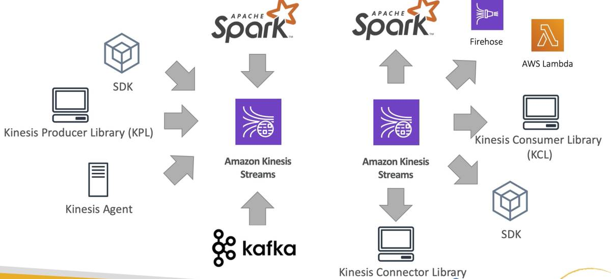
Kinesis Data Stream Producers:
Kinesis Producer SDK
Kinesis Producer Library (KPL)
Kinesis Agent
3rd party libraries (Spark, Kafka, NiFi, etc)
Managed AWS Sources (CloudWatch Logs, AWS IoT, Kinesis Data Analytics)
Kinesis Producer SDK: to be utilized for simple – low latency scenarios - If we go above the size / throughput limits (1MB/second or 1000 messages/s at write PER SHARD) then a ProviderThroughputExceed exception is thrown.
PutRecord – one record (1 user record / 1 stream record / 1 http call)
PutRecords – many records (multiple user records / 1 stream record / I http call) – utilizes batching
Options to try when ProvisionedThroughputExceeded Exception is received 1) ensure you don’t have a hot shard i.e. example if you key is device type and 90% of your devices happens to be iPhones then all messages will end up going to the single shard or 2) Retries with back off or 3) increase number of shards
Kinesis Producer Library (KPL): Highly configurable C++ / Java library – Built in retry mechanism – supports both Synchronous and Asynchronous APIs (for better performance) – Built in Batching (Aggregate and Collect) and on by default – Compression not supported and need to be done programmatically
Batching Types: Aggregate and Collect - 1) Aggregate: waits till more user records and aggregates all the info into one stream record (assuming the 1MB limit is not reached) and 2) Collect: when previous aggregation is completed and there are 2 user records instead of calling PutRecord twice PutRecords is invoked (assuming 1MB limit is not reached)
Note: When using PutRecords a single failure does not stop the processing of subsequent records – a HTTP 200 response is still returned – In this case to detect partial failures the ‘PutRecordsResult’ method in the KPL can be utilized to detect individual user record failures and then retry the PUT
Batching interval governed by setting RecordMaxBufferedTime (default: 100ms). Don’t use KPL if you want to send the data immediately to the stream since KPL is asynchronous plus also coz RecordMaxBufferedTime
Kinesis Agent: Java based agent built on top of KPL – Can be utilized currently in only Linux environments and primary used to upload log files – basic pre-processing and transformations (csv to json, logs to json, etc) can be done
Kinesis Consumers:
Kinesis Consumer SDK
Kinesis Client Library (KCL)
Kinesis Connector Library
Kinesis Enhanced Fan Out
3rd party libraries (Spark, Kafka Connect, Log4J, Flume, NiFi, etc)
Managed AWS Sources (Kinesis Data Firehose, Kinesis Analytics, Lambda)
Kinesis Consumer SDK: Polling mechanism with GetRecords API call - Max throughput is 2MB per second / shard – GetRecords returns upto 10MB of data or upto 10K records – Given the 10MB goes over the 2MB limit 5 seconds will need to be waited before the next call – plus max only 5 GetRecords calls can be made every second…so 200ms latency…so if we have more consumers then they will all share the 2MB size limit and 5 GetRecords calls per second limit (Example -> we have 10 consumers then the latency will be 2 seconds per consumer) . For better results see -> Kinesis Consumer Enhanced Fan Out option
Kinesis Client Library (KCL): Java First but also supported for Golang, Python, Ruby, Node, .NET, etc. – In built de-aggregation (for KPL aggregation) turned on by default
Supports checkpoint feature i.e. case of 2 applications points to the same shard and if one of the applications goes down and comes back up then it is able to pick up where it left off – the checkpointing is done by utilizing Dynamo DB in the background (given DynamoDB is utilized ensure enough WCU / RCU is utilized or utilize On-Demand provisioning for Dynamo DB . (Important – if this is not provisioned correctly then this has the potential to slow down consumption)
KCL uses the name of the Streams application to create the DynamoDB table name, so use unique names in KCL. Each row in the DynamoDB represents a shard and the partition/hash key is the shard id.
Default provision through for DynamoDB for checkpointing is 10RCU and 10 WCU
Kinesis Connector Library: Older legacy library – Java Based – Used along with Kinesis client libraries – connectors for DynamoDB, RedShift, S3 and Elastic Search– running on EC2 – really not used – same function can be done by Lambda or Firehose. The Connector library uses KCL behind the covers plus add additional functionality for talking to the specific AWS service + transforms / filters / batching
Kinesis Enhanced Fan Out: Need to have KCL 2.0 or Lambda Nov 2018 or later – No polling but Push Model – consumer initially SubscribeToShard() and then data is pushed to consumer at the rate of 2MB per second per shard per consumer – More consumers can be added to increase the throughput – max consumers is 5 per shard but this can be increased by contacting AWS support – Latency reduced to ~70ms – catch....this is more expensive!
Kinesis Scaling: Adding of shards is called ‘Shard Splitting’ – essentially 2 new shards are created instead of an existing one – the existing shard is available till the time all the messages in the shard are not expired. This can be utilized to rectify a ‘hot’ shard. Opposite of this is ‘Merging Shards’ done in order to decrease capacity and save costs. Merging creates a new shard and the 2 existing shards are around till the data is emptied.
Limitations: Re-sharding cannot be done in parallel – and it takes a few seconds per shard…example doubling shards from 1000 to 2000 takes about 8 hours.
Auto Scaling option exists but not a native feature and needs to be done manually.
Kinesis Security: Control access / authorization using IAM policies - Encryption in flight using HTTPS endpoints - Encryption at REST using KMS - Client side encryption can be done (but is harder)
Kinesis Data Firehose: fully managed service - ‘near’real-time (1 minute for non- full batches) – automatic scaling – no data storage. Pay for only throughput utilized
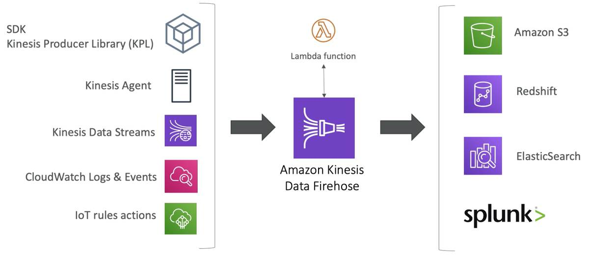
AWS SDK for Firehose supports two operations similar to data streams -> PutRecord and PutRecordsBatch
Destinations are the only 4 in the diagram above. Spark can consume from Kinesis Data Streams but not from Kinesis Firehose
Data transformations can be done (example JSON to Parquet). Other transformations (example CSV to JSON) can be done utilizing AWS Lambda. Bunch of AWS lamda blueprints are available for standard transformations.
Parameters required to be in the message for transformation –
recordId: transformed record must have the same value before and after transformation / result
transformed record status: ‘Ok” ‘Dropped” ‘ProcessingFailed”
data – transformed data payload
Blueprints are –
Apache Log to JSON
Apache Log to CSV
Syslog to JSON
Syslog to CSV
Kinesis Firehose processing (generic/custom)
Note: failure handling -> 3 retries / cloud watch notification of errors / errors sent to to S3 in the ‘processing_failed’ folder
Kinesis Firehouse can also be configured to backup original source in a different bucket along with the transformed data (plus transformation and delivery failures)
Firehose to S3 -> frequency depends upon buffer size / interval – Firehose can dynamically modify the values dynamically – Firehose will retry deliveries for upto 24 hours – data is lost beyond this period
Firehose to Redshift -> depends upon how fast Redshift clusters can finish the COPY command (Note: Firehose copies to S3 behind the scenes and then issues a COPY) – Firehose will issue a new COPY command once previous is complete – Retry duration can be specified between 0 to 7200s i.e. 2 hours – the failed S3 objects is saved in a manifest file for manual verification / porting
Firehose to ElasticSearch -> frequency depends upon buffer size / interval – Firehose can dynamically modify the values dynamically - Retry duration can be specified between 0 to 7200s i.e. 2 hours – similar to Redshit failed index documents in are saved in S3 in folder called elastic search failed
Supports compression when target is S3 (GZIP, ZIP and SNAPPY). Only GZIP supported when target is RedShift
Firehouse Buffer Sizing – when does buffer get flushed – (IMPORTANT -> Firehose ca automatically modify the values to increase throughput)
Buffer Size: size is reached then flushed (min 1MB|max 128M`B|def 5MB)
Buffer Time: time is reached then flushed (min 1min|max 15min|def 5min)
SQS
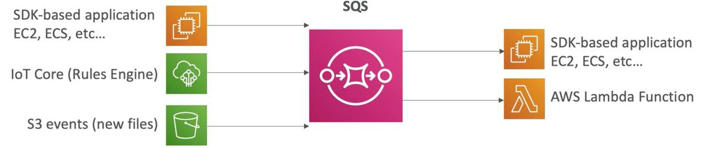
Guarantees at least once delivery – pull based system. Less than 10ms latency
scales automatically from 1msg/second to 10kmsgs/second. No limit on number of consumers attached. Max 120,000 inflight messages that can be processed
Messages can be kept for a min of 1 minute or a max of 14 days. Default is 4 days.
Two Types – Standard Qs (best effort but order is not guaranteed) and FIFO Qs limited to 3000msgs/second (using batching) – De-duplication if Duplication ID is passed within a 5 minute window.
There is a risk of duplicate processing here and should be taken care by the app. The ordering is best effort ordering and so there can be out of order messages
SQS messages are made up of
Message Body (String) – 256KB max message size
Message Attributes (key-value pairs) [optional]
Delay Delivery [optional]
Response – MessageId and MD5 hash of the message
Consumption: Poll SQS for messages – max 10 at a time/consumer. Processing of the message needs to occur within the visibility timeout. Long polling is supported i.e. poll less frequently when there are no messages on the queue
Visibility Timeout: The amount of time the message is sitting invisibly on the queue while it waits for the message to be fully processed. If the job is not fully processed the message becomes visible again after the visibility timeout period. Max = 12 hours
Is message of size more than 256KB has to be sent then SQL Extended Client (Java Library) can be utilized. Beneath the covers the message is stored in S3.
Pay per API Request and pay by network usage
In flight encryption using HTTPS – Can enable SSE using KMS for encryption at rest (only the message body is encrypted and not the message attributes) – IAM policies can be applied – access policy per SQS queue can be applied
can be used with SNS to achieve fan out / async parallel processing
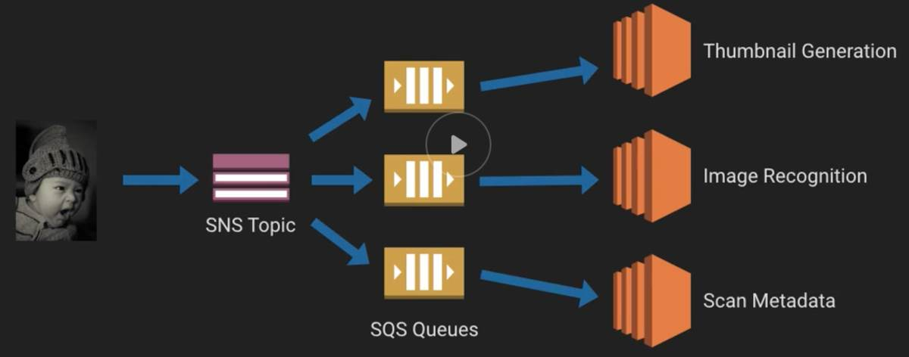
COMPARISON (KINESIS DATA STREAMS vs FIREHOSE vs SQS vs SQS FIFO)
Basic sequence -> create thing type -> create thing -> create certificate (principal) -> create IOT policy JSON -> attach policy to certificate/principal -> attach thing to certificate/principal -> configure client send data -> create IOT Rules
Rule Actions can be configured to send the info to Lambda, SQS, SNS, DynamoDB, Kinesis Streams, Firehose, ES and ML – Rules need IAM roles to perform these actions
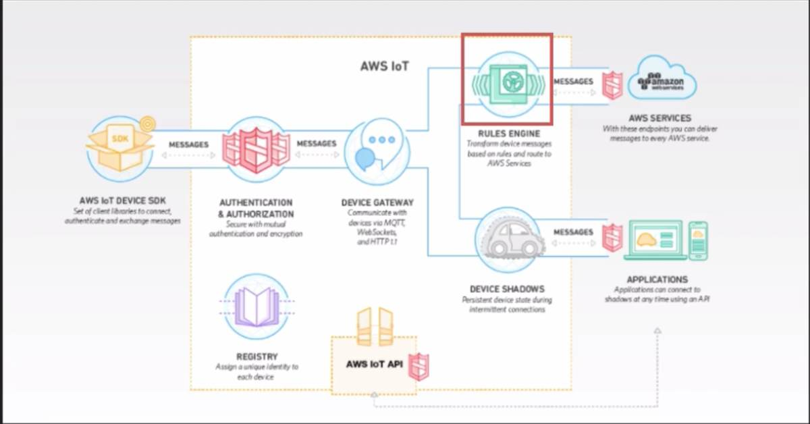
DMS
Supports Homogeneous (example: Oracle to Oracle) and Heterogeneous Migrations (example: Oracle to Aurora) – One time and Recurring migrations
The replication is done by using CDC – “Continuous Data Replication” – EC2 instances are used behind the scenes – appropriate configurations reqd during setup
AWS Schema Conversion Tool (SCT) – helps to convert one schema format to another required for the replication - needed for heterogeneous migrations
Sources:
On-Prem and EC2 instances -> Oracle, MS SQL Server, MySQL, MariaDB, PostgreSQL, MongoDB, SAP, DB2
Azure SQL DB
RDS
S3
Targets:
On-Prem and EC2 instances -> Oracle, MS SQL Server, MySQL, MariaDB, PostgreSQL, MongoDB, SAP, DB2
RDS
Redshift
S3
ElasticSearch
Kinesis Data Streams
Document DB
Note: Be cognizant of size of DB – If DB size is 100TB then it makes sense to use SnowBall – if 1 to 5TBs then DMS is a good option w/ Direct Connect though you will also need to factor how Direct Connect wil be affected
Storage Gateway
AWS Storage Gateway is a hybrid cloud storage service that gives you on-premises access to virtually unlimited cloud storage - seamlessly connect on-premises applications to cloud storage, caching data locally for low-latency access - Your applications connect to the service through a virtual machine or gateway hardware appliance using standard storage protocols, such as NFS, SMB, and iSCSI.
Data Sync
AWS DataSync agents on prem push securely and fastly to S3, EFS…
Direct Connect
Direct Connect: VPN connections go through the internet. AWS Direct Connect does not. It is a dedicated / direct (dark fibre) connection between your facility and AWS (i.e. AWS DirectConnect facility) – 1Gbps to 10Gbps connections
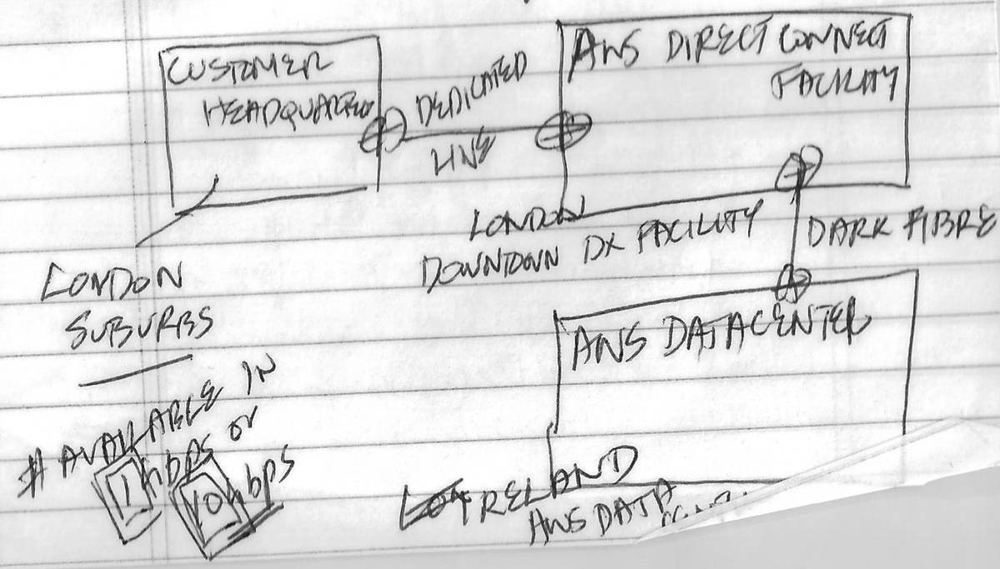
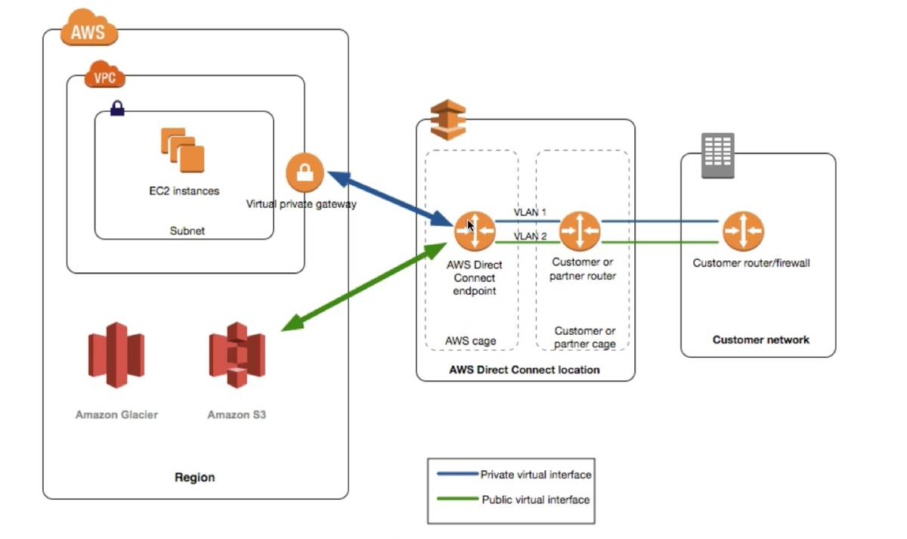
HA can be done by setting 2nd DC as failover or “Site-to-Site VPN” as failover
Direct Connect Gateway: This is to be utilized in cases where direct connect is to connect to one or more VPCs in different regions
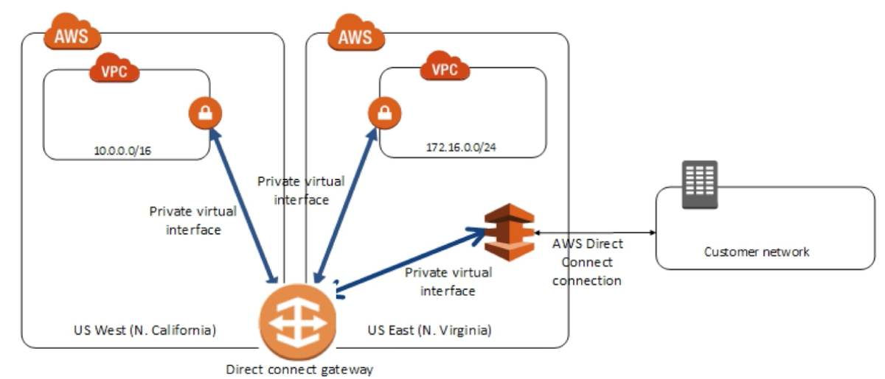
Snowball
SNOWBALL
SNOWBALL EDGE (AWS IN A BOX)
SNOWMOBILE (TRUCKS!)
80 TB – import from S3 and export to S3
100TB [Storage + Compute]Storage Optimized – 24vCPUCompute Optimized – 52vCPU (and optional GPU)Ex: Monitoring plane flying in artic collecting huge amount of data with some basic processing
Fully managed Kafka service on AWS – alternative to Kinesis - MSK let’s you do CRUD operation on clusters (control pane) – ZooKeeper nodes created for node coordination – replication to 3AZs – data is stored on EBS volumes – your responsibility to define and operate kafka producers and consumers (data plane)
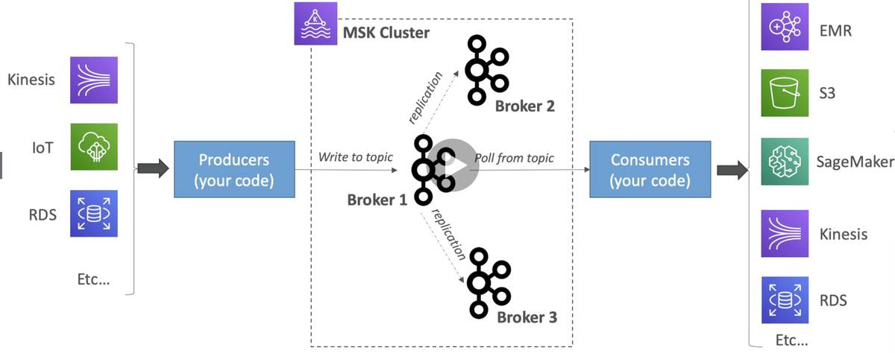
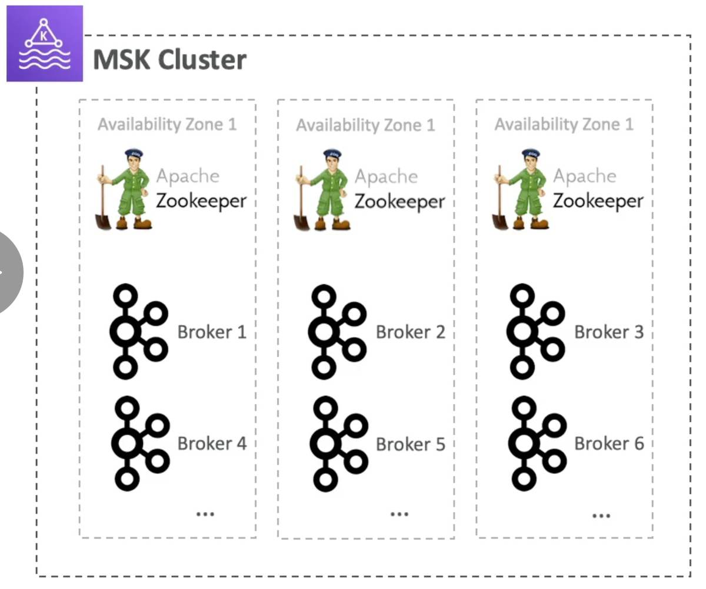
IMPORTANT -> max size is 1MB but this can be overridden by setting message.max.bytes (on broker) and max.fetch.bytes (on consumer) setting thus allowing larger messages which could be a limitation when Kinesis is used.
Latency is in the order of 10-40ms and this can be configured using linger.ms property (equivalent of RecordMaxBufferedTime)
Security
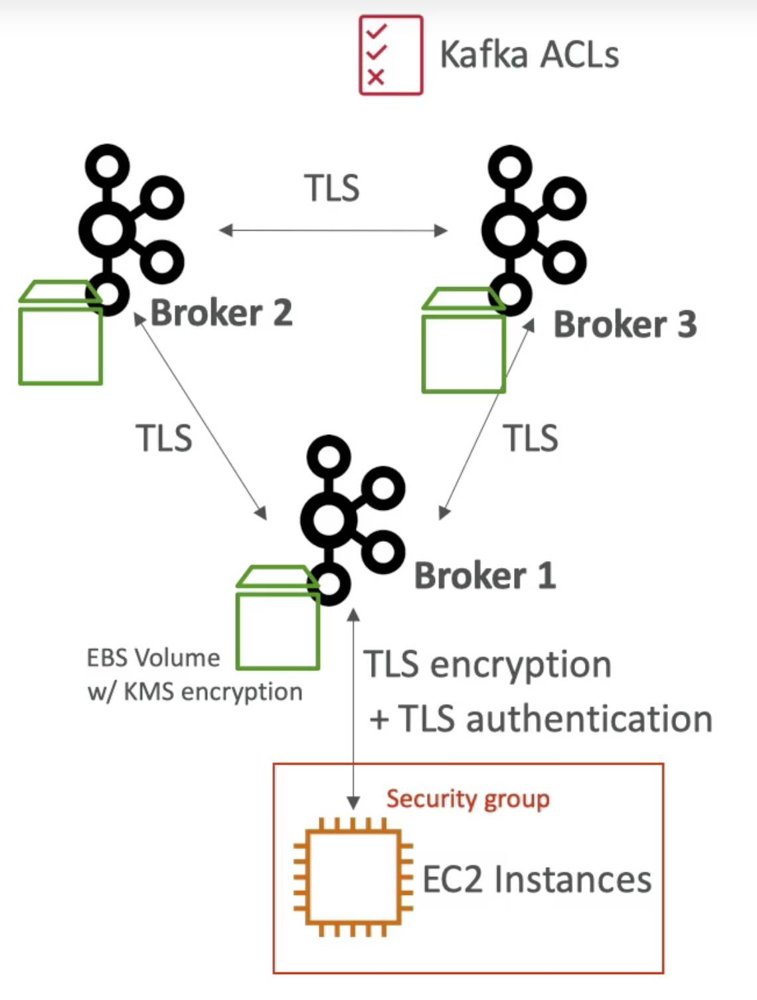
Data Storage›
S3
Object based storage – stored in buckets a.k.a folders / directories.
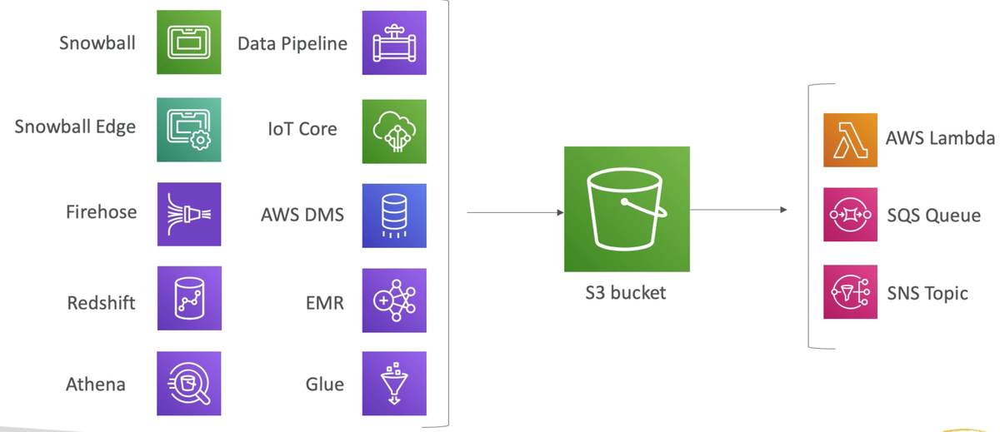
Buckets must have globally unique name and are defined at a region level – naming convention { no uppercase | no underscore | 3-63 characters long}
File sizes can be from 0 to 5TB. Storage is unlimited. If files are above 5GB then utilize multipart upload. The multipart upload does a parallel operation and this also ensures faster performance.
‘Read after Write’ consistency for PUTs (creates) and ‘Eventual’ consistency for overwrites (updates) and deletes. Note: one caveat for PUTs is it is immediately preceded by a GET call -> in this case eventual consistency is seen (think transactions)
What is stored: {key, value, version id, metadata, security info}. The key is essentially the full path to the object starting at the bucket level
Object stored across multiple AZsMinimum storage duration charge: N/A
Lower fee than S3 but fee for retrievalsMinimum storage duration charge: 30 days
Same as IA but there is no cross AZ replication of data. Use this for thumbnails instead of RRSMinimum storage duration charge: 30 days
S3 (RRS) ** Deprecated **
S3 Intelligent Tiering
GLACIER
GLACIER DEEPARCHIVE
Reduced Redundancy Storage
Intelligent Tiering
Glacier
Glacier Deep Archive
99.99%
99.90%
99.99%
99.999999999%
99.999999999%
99.999999999%
Durability drops. Ex. for storing thumbnails which can be re-generated if bucket is lostMinimum storage duration charge: 30 days
Similiar to S3 standard but automatic tiering is built in based on usage patternsMinimum storage duration charge: 30 days
Long term storage Retrieval Options:Expedited:1-5 minsStandard: 3-5hrsBulk: 5-12hrsMinimum storage duration charge: 90 days
Super long term storageStandard: 12hrsBulk: 48hrsMinimum storage duration charge: 180 days
Glacier
Each item in Glacier is called an “Archive” and can be upto 40TB. Archives are stored in “Vaults”
Vault Policies -> Each Vault has one Vault Access policy and one Vault Lock policy. Vault Policies are written in JSON. Vault policy very similar to bucket policies.
Vault lock policy is a newer policy for regulatory and compliance requirements – It is immutable. Once set it cannot be altered. Example1 -> Policy that the vault cannot be deleted for an year. Example 2-> WORM Policy (Write Once Read Many) – this just ensures once written the data cannot be overwritten…basically no updates
S3 Lifecycle Management
Transition Actions and Expiration Actions - Example: Action on current version - after 30 days → move to S3 IA → after 60 days → move to Glacier → after 1 year expire (same steps for previous versions)
Transitions Actions ←→ Expiration Actions ←→ Rules for certain prefix / tags
S3 Versioning
makes copy and stores each copy. watch out for size
When a delete is issued on a file it will not show in the bucket but when we see the versions then a delete marker is added to the latest version of the file – interestingly deleting the delete marker reverts the file and it now shows in the bucket – Also MFA can be specified to prevent accidental deletes
Note: Lifecycle Mgmt can be applied in tandem to versions as well. i.e keep current version in S3 Standard but move older versions to S3 IA or S3 IA Single Zone.
S3 Cross Region Replication
Pre-requisite: replication requires versioning to be enabled across both regions
Note: any objects present before enabling of replication are not copied over. This (copy) needs to be done manually. AWS CLI can be used for this purpose
Adds/Updates/Deletes are automatically replicated across regions.
Replication can also be done across different accounts
S3 Performance
When you have greater than 100 transactions / second then S3 performance could degrade. So as an option it was recommended to randomize say the folder names to ensure that the keys are stored in different partitions. But there has been a recent update and after this S3 scales to 3500 puts/second and 5500 gets/second (Note-> “for each prefix”). If still more is needed then additionally randomize.
SSE-KMS also slows down S3 (~100 to 1000 transactions / second). You need to contact support in order to increase
S3 Transfer Acceleration
S3 TA utilizes the CloudFront edge network to accelerate the uploads to S3
CloudFront can also be utilized to increase read performance by caching S3 objects closer to the edge / regions accesses from.
You can use a distinct url to upload directly to the edge location which will then transfer to S3 pattern: myBucket.S3-acclerate.amazonaws.com
S3 ETag (Entity Tag)
Utilized to verify the integrity of the file that has been uploaded (using hashing). For files lesser then 5GB basic MD5 hash is used.
S3 Select / Glacier Select
Server side filtering (using SQL like statements) to ensure less data is transferred – thereby reduces cost – typically used with Hadoop to retrieve only data that is needed
S3 Security
By default, the buckets are not publicly accessible
Two flavors exist for securing the buckets/objects
User Based: Using IAM policies – which actions can be performed for a specific user/role
Resource Based:
Object ACLs (unix type: owner - other accts – public)
Bucket Policies (preferred) – JSON based {
Resources: buckets and objects
Actions: set of APIs to allow or deny
Effects: Allow / Deny
Prinicpal: The account or user to apply the policy to}
Example: grant public access to the bucket / force objects to be encrypted at upload / access to another account
Bucket ACLs (not widely used)
S3 Encryption: SSE-S3 or SSE-KMS or SSE-C or Client Side Encryption
SSE-S3: Server Side Encryption – AES256 - Keys Managed by AWS S3 but not utilizing KMS. A header must be set “x-amz-server-side-encryption”:”AES256”
SSE-KMS: Similar to SSE-S3 but since KMS manages the keys (customer master key) advantageous (more control over rotation of keys + audit trail) . A header must be set “x-amz-server-side-encryption”:”aws:kms”
SSE-C: Same as previous but keys are fully managed by the client outside of AWS. Encryption key must be provided header in every https/s3 request being made. HTTPS is mandatory for SSE-C
Client Side Encryption: manual / custom (using S3 Encryption SDK)
Note: For encryption in transit utilize HTTPS instead of HTTP for S3 transactions + SSE-KMS and SSE-S3 can be done through console / others only programmatically
S3 CORS (Cross Origin Resource Sharing)
CORS enables to govern and limit the number of websites that can request for the files in S3. Interaction example below..
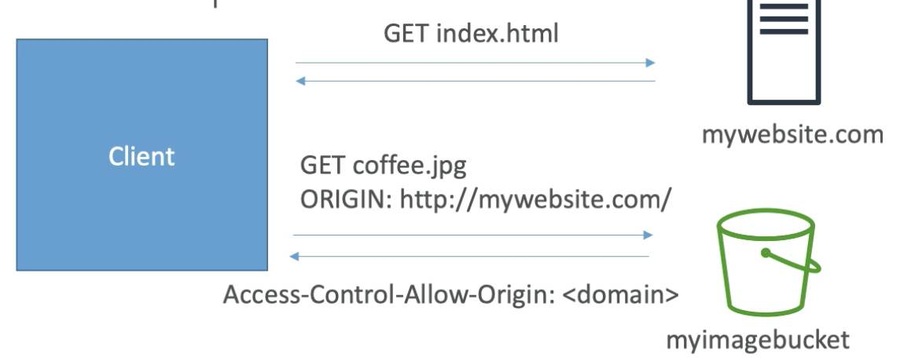
S3 Security Other
S3 Access Logs can be turned ON on S3 buckets. All actions are then logged into another S3 bucket / API calls can be also be logged in CloudTrail
Supports VPC endpoints ()
Signed URLs: URLs that are valid only for a certain time (example: premium video service for logged in users)
Dynamo Db
Fully managed NoSQL database – highly available / performant (fast - low latency reads and writes) – all data replicated across 3 AZs – millions of reqs/second | trillions of rows | 100s of TB storage – Low cost supports On Demand and auto scaling modes
For
Mobile apps
Gaming
Digital ad serving
Live voting
Audience interaction for live events
Sensor networks
Log ingestion
Access control for web-based content
Metadata storage for Amazon S3 objects
E-commerce shopping carts
Web session management
Similar to Relational → Basics / Partitions / Indexes / APIs / Backup / Restore
Each table needs to have a primary key. Two options are –
Primary Key = Partition Key (HASH) – needs to be unique + diverse so data is distributed across partitions. Example: user id
Primary Key = Partition Key + Sort Key (HASH + RANGE) – combination of the two needs to be unique. Example user / games mapping table then user id is the partition key and game id is the sort key
Places to use DynamoDB: “hot data” i.e. high volume reads/writes but “simpler” data. Places not to use DynamoDB / NoSQL: 1) complex joins / transactions 2) BLOB
data (in this case store in S3 / store the meta data in DynamoDB) 3) Low I/O reqs
Provisioned Throughput
When a table is created then read and write capacity units must be specified. Read Capacity Units (RCU) and Write Capacity Units (WCU). The allocated RCUs/WCUs are distributed equally across the available partitions
It is an option to not select the units by selecting
On Demand option (this is expensive).
Auto Scaling option: is similar to On Demand mode but we specify a min and max RCU/WCU values within which scaling occurs
Manual: manual
When RCUs and WCUs have been specified then throughput can be exceeded by using “burst credit”. If the burst credits are exhausted then “ProvisionedThroughputException” will be received. It is then recommended to do exponential back-off retry
1 WCU represents 1 write per 1 second for an item up to 1KB in size.
Examples:
[1 write every 1s of size 1KB] [111]
10 objects / second of 2KB each => 10 * 2 = 20 WCUs
6 objects / second of 4.5KB each => 6 * 5 = 30 WCUs (KB gets rounded up)
120 objects / minute of 2KB each => 120 / 60 * 2 => 4WCUs
1 RCU represents 1 strongly consistent read up to 4KB per second or 2 eventually consistent reads per second for an item up to 4KB in size.
Examples:
[1 strongly consistent read every 1s of size 4 KB] [114]
[2 eventually consistent read every 1s of size 4 KB] [214]
10 strongly consistent reads / s with 4KB each => 10 * (4 / 4) = 10RCUs
16 eventual consistent reads / s with 12KB each => (16 / 2) * (12 / 4) = 24RCUs
10 strongly consistent reads / s with 6KB each => 10 * (6 / 4) = 20RCUs (rounded)
Note- by default DynamoDB follows Eventual Consistency for reads. GetItem, Query and Scan provide a “ConsistentRead” parameter that can be set to true to ensure Strongly Consistent reads.
If RCUs and WCU are exceeded then a ProvisionedThroughputException is received. Some of the reasons for this is 1) Hot Keys / Partitions – case where one partition key/keys is read too many times – example a very popular item 2) very large items being read/written. Some solutions are 1) Exponential back-off when exception is encountered (baked into SDK) 2) Distribute partition keys as much as possible 3) Utilize DynamoDB Accelerator (DAX)
Utilize DynamoDB Accelerator (DAX): Intermediate cache layer in front of DynamoDB. Writes go right through – Reads go to DAX instead. Default time-to-live 5 mins. Can be up to 10 nodes in the DAX cluster. Min recommended 3 nodes
Partitions
Few scenarios for partition key distribution
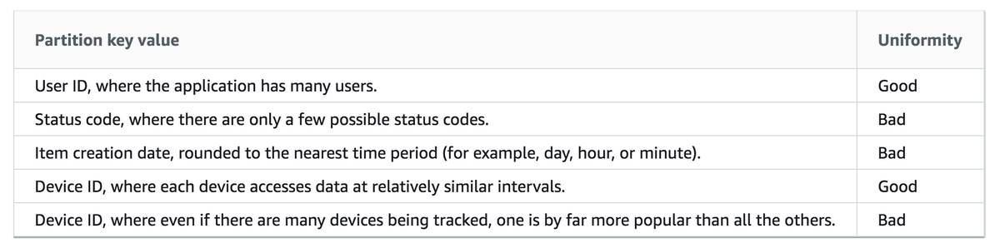
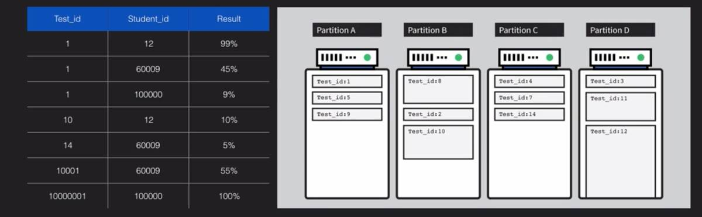
You start with one partition. Each partition can have a max of 3000RCU / 1000WCU and Max of 10GB. After this a new partition will be created (IMPORTANT: Automagically)
To compute number of partitions required –
Find Max of(Ceiling (Total rcu / 3000 + Total wcu / 1000) OR (Total Size / 10GB))
Note: that the partitions do not scale down after peak demand times and this can lead to perf issues – i.e. during peak times say you have increased the partitions from 5 to 10. Now during off peak times the WCU/RCUs allocated are across the 10 partitions and not 5 so essentially each partition gets reduced WCU/RCUs
Index
Local Secondary Indexes (LSI) and Global Secondary Indexes (GSI)
Local Secondary Indexes: Partition key is the same but there is an alternate sort/range key. You can define up to 5 LSIs. Each range/sort key must be one scalar attribute and either String, Number or Binary – LSI can be defined only at table creation time – The LSI sort key may or may not be present…so the actual number of records in the index can be smaller than the number of records in the table...hence called sparse index (and this therby speeds things up as it is a smaller subset of data to look at) – In addition to the partition key + sort key + LSI value additional projection attributes can be added to the index…example result in example below
RCU/WCU is shared with the main table
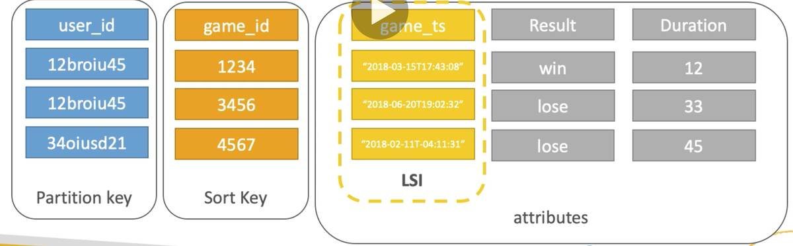
Global Secondary Indexes: In this case the partition key is also new and optionally can have a sort key as well - Can be defined even after table creation time – The index is essentially a new table that is created as an index table along with the main table –
Options for attribute projections –
KEYS_ONLY- new partition and sort key, old partition key and if applicable old sort key
INCLUDE – specify custom projection values
ALL – project all attributes
RCU/WCU is not shared with the main table and should be defined on the index
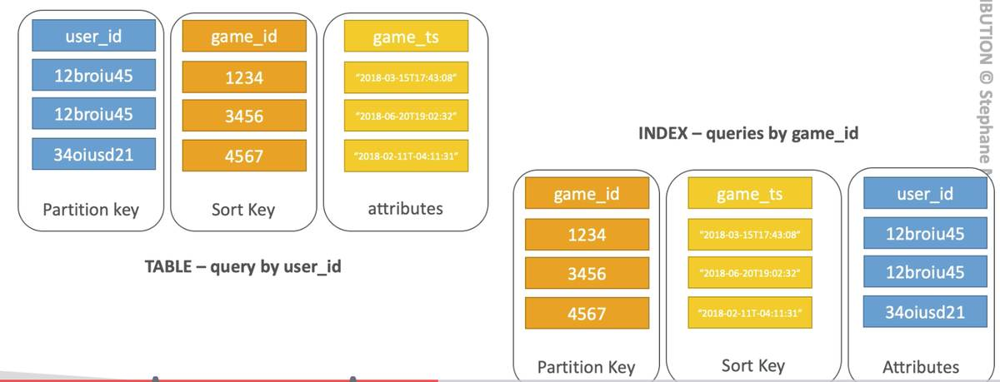
APIs
PutItem – create or full replace
UpdateItem – update i.e partial update of attributes
DeleteItem – delete a row i.e item
GetItem – read item based on primary key (just by partition or partition + sort key)
ProjectionExpression can be utilized to include only certain items
DeleteTable – deletes the whole table
BatchWriteItem – 25 PutItem or DeleteItem in one call / upto 16MB of data
BatchGetItem – upto 100 items / upto 16MB of data
Additionally Conditional Writes – Create/Update only if certain conditions are met
Query – query can be done ONLY on partition key (using ‘=’) and the sort key (using ‘=’ or ‘<’ or ‘>’ or ‘<=’ or ‘>=’ or ‘between’ or ‘begin’) . Any further filtering can be done by using a FilterExpression (this is client side filtering and NOT what DynamoDB returns). The query return up to 1MB of data or number of items specified in Limit
Scan – scans the entire table. This is inefficient unless the table is small (parallel scans can be done)
DynamoDB Streams
Get changes made to the DynamoDB table in real time. The data from this stream can be fed to an Lambda function or better use KCL to send to Kinesis Data Stream.
pairs great for updating caches
Similar to other streams this has a retention period (only 24 hours) and batch size up to 1000 rows or 6MB. Expiry can take up to 48 hours to take effect
Usecases (Replication & Triggers & Cross Region ) – examples -> send welcome email to new users from users table | create new derivative tables/views | feed Elastic search | do cross region replication for DR fail over
Streams can be configured with 4 views –
KEYS_ONLY: only key attributes are written to the stream
NEW_IMAGE: the entire new item/record is written to the stream
OLD_IMAGE: the old item/record is written to the stream
NEW_AND_OLD_IMAGES: both the old and new records are written
DynamoDB Other
DynamoDB Auto-Scaling: this is where a min/max can be defined for RCUs/WCUs and automatically the numbers are adjusted based on load
DynamoDB Adaptive Capacity: RCUs/WCUs are evenly distributed across the partitions – partition key should be designed such that data is spread across and traffic is even across the partitions – but this is typically not the case – so in these cases DynamoDB automatically assigns additional RCUs/WCUs to the hot partition`
DynamoDB TTL - Free service for expiring / deleting data based on time – runs background – does not consume RCUs or WCUs
Security: VPC Endpoints available to access without internet – Access fully controlled by IAM – encryption at rest (KMS) and in transit (HTTPS – SSl/TLS)
Backup / Restore – Point in time Restores can be done
Storing large objects / BLOBS - best practice here is to store the objects in S3 and then have the pointer/metadata information stored in DynamoDB. For large files (>400KB) this would be default. But even for items that are lesser (say 300KB) the above approach can be taken if the object is not accesses frequently. If frequent access then go the DynamoDB route.
Global Tables – Multi Region / Fully Replicated / High Performance
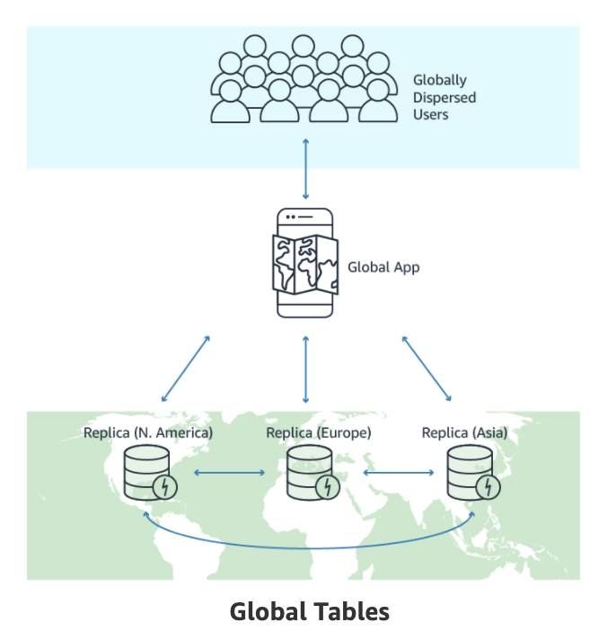
Elastic Cache
Redis – preferred | key-value based | can survive reboots | Multi AZ with automatic failover – support of read replicas
MemCached – nothing special
Data Processing›
Lambda
FAAS - serverless – stateless - execute code snippets – magic glue between different services – implement real time event driven data processing
Each Lambda execution cannot take more than 900s to execute and the max size of the data that it can receive is 6MB – local ephemeral disk capacity (“/tmp” space) per lambda is 512MB – max no of processes/ threads that can be spawned – 1024 – There is also a cap of 1000 concurrent invocations per account per region though this can be increased by request
Can be used for real-time file processing, real-time stream processing, ETL, cron type/scheduler functions and processing AWS events
Supported Languages {node.js, python, java, C#, Go, PowerShell, Ruby}
Lambda Triggers (following list + alexa + manual + more)
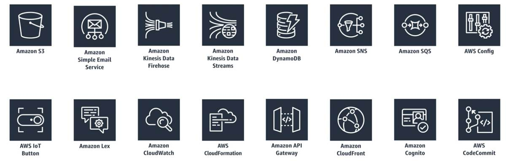
Completely stateless i.e one lambda in completely independent of other. Few other options could be taken for batch type processing. Example -> lambda utilized to bulk load streaming data from S3 to RedShift. Here Lambda can just write to DynamoDB counter/time variables and when sufficient records are collected then a batch upload can be done to RedShift. DynamoDB also ensures no old files are loaded.
Lambda + Kinesis DataStreams: When Lambda is pointed to DataStreams it receives batches of records. The max size is 10000. Too large a batch size can cause timeouts – Lambda also retries the batch until execution succeeds or the data expires. So make sure that the shards are not locked up because of lambda. Note: Lambda under the hood polls the Kinesis datastream
Pay for what you use – Free Tier (1 million requests/month or 400K GB-seconds compute time) – beyond free tier $0.20 / million requests - $0.00001667 per GBs
External invocations can be done in conjunction with API Gateway
Examples of using Lambda as a glue –
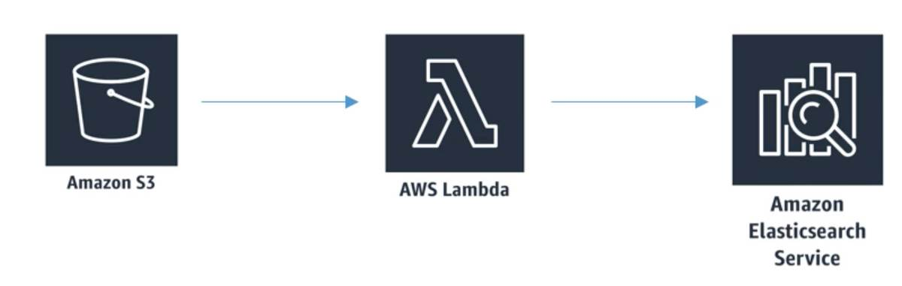
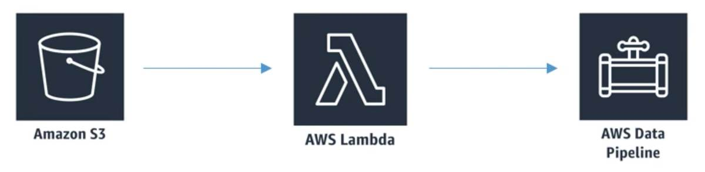
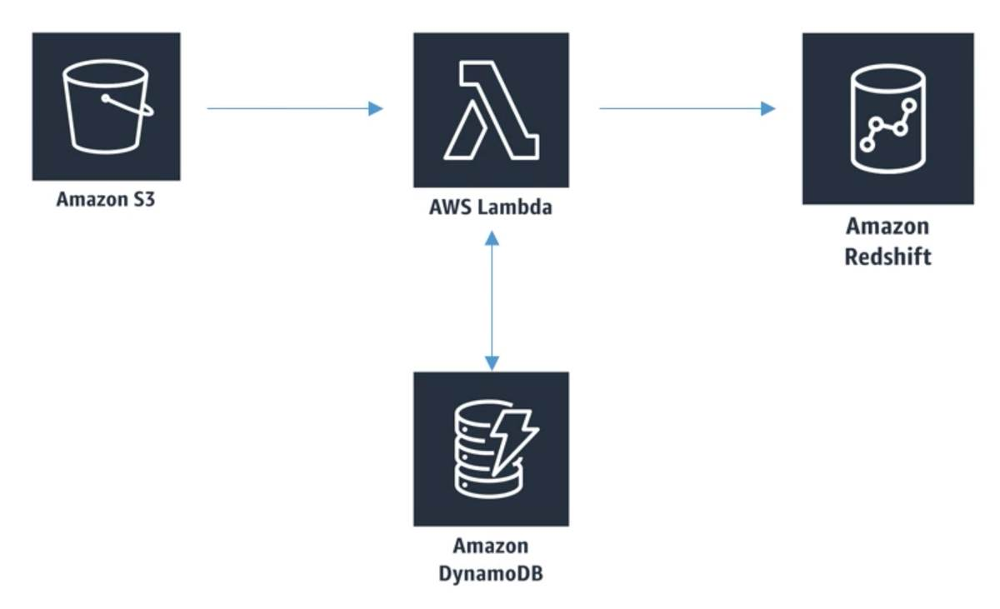
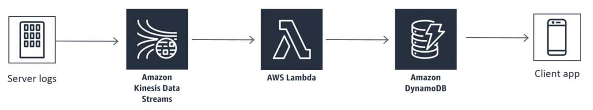
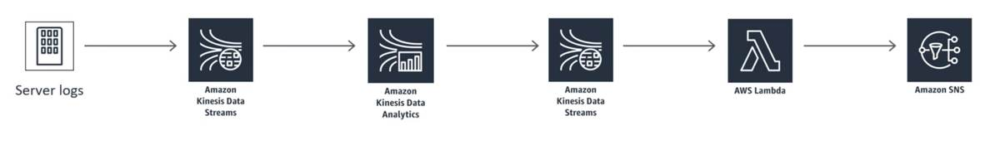
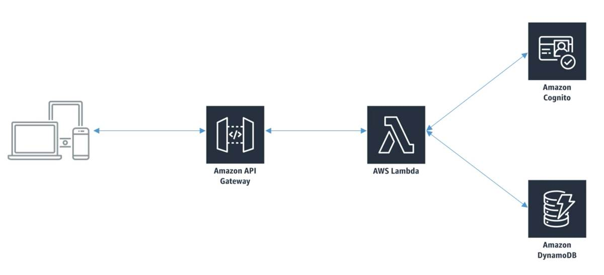
Glue
Main purpose is to provide a serverless and easy way for discovery and definition of table structures/schema from unstructured – semi structured inputs. i.e in essence provide structure to unstructured data - Other purpose Glue is utilized for is as a tool for executing ETL jobs – Glue behind the covers uses Spark - Can be run manually or on schedule
Do not use for streaming data – not for NoSQL DBs (which don’t have structure to begin with) – and given Glue ETL is PySpark based not for heterogeneous set of jobs that run on a wide variety of engines like Hive, Pig, etc
Data sources typically S3 “data lakes”. Downstream users could be Athena, Redshift, EMR, etc.
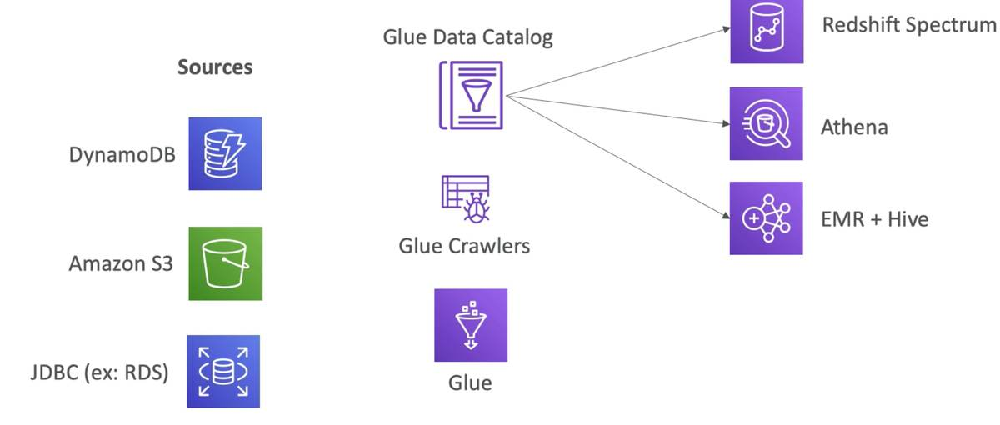
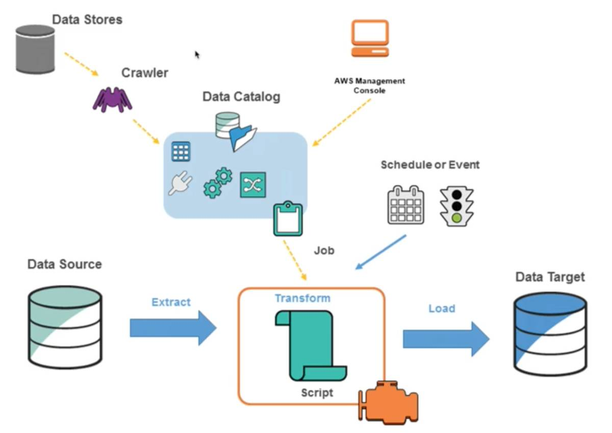
Glue Crawler is the specific component that finds and infers structure from the data in the data lakes. The findings gets published in the ‘Glue Data Catalog’ (columns names, data types, where the data is stored)
Glue Crawler will extract partitions based upon how the data in S3 is organized. So it is important to think up front the data is organized / folder structure in S3 at the get go based on how queries will be. Example of IOT data is the data has to be heavily queried by device or timestamp can dictate if the parent folder is date or device id.
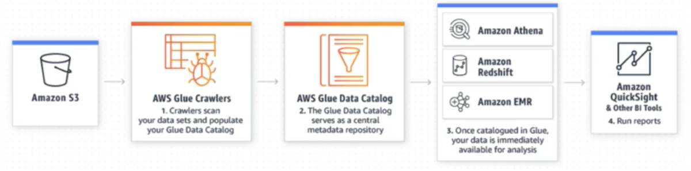
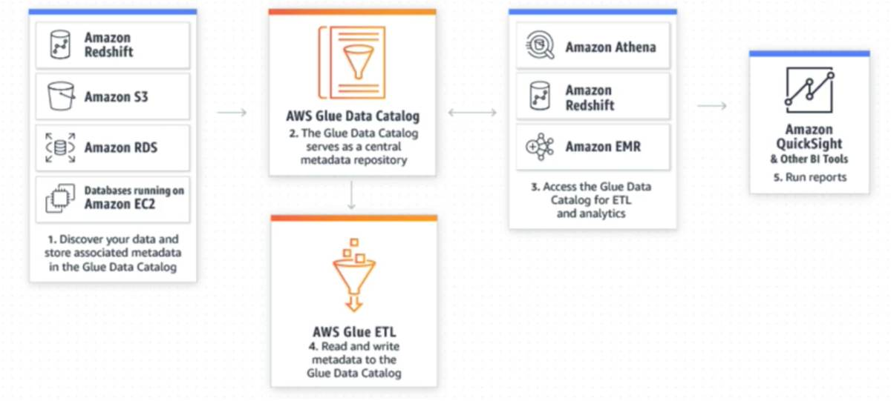
Glue ETL
Purpose is to transform, clean, enrich data (before doing analysis). Python or Scala
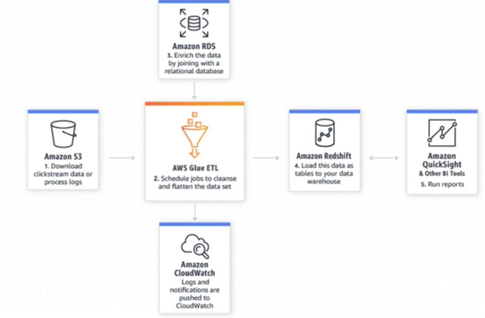
Write custom code or utilize automatic code (Scala or Python) generation after transformations are defined on data in a graphical manner – runs on Spark beneath the covers – supports encryption with rest – can run on schedule or event based – errors can be routed to CloudWatch / SNS for notifications. Option to also provide Spark or PySpark scripts to run.
Glue ETL comes with some basic bundled transformations ‘Drops’ (DropFields / DropNullFields) – ‘Filter’ Functions (drop data based on some conditions) – ‘Joins’ Functions (enrich data based on other tables) – ‘Map’ Functions (add fields, delete field, perform external lookups). Outputs of the ETL jobs are typically S3, JDBC (RDS/Redshift) or Glue Data Catalog
Glue ETL ML transformations: Main one is FindMatches ML – find duplicate or matching records in your dataset (example: 3rd party seller selling the same item in Amazon under different names/descriptions). This plus also transformations that comes bundled with Spark (like k-means clustering/etc)
Glue ETL Format Conversions: between json, csv, xml, parquet, avro, etc
If complicated ETL script generation is required that cannot be done on the Glue ETL console then the following options can be utilized
Apache Zeppelin on your local machine
Zeppelin Notebook on EC2 server
SageMaker Notebook
Terminal Window
PyCharm professional edition
Glue Job Bookmarks: persists state from job run – prevents processing of old data thereby only processing new data when running on a schedule. Typically used w/ S3.
Can fire-off lambda function / SNS notification / invoke EC2 run / send event to Kinesis / activate Step Function thru notifications to CloudWatch.
With AWS Glue, you pay an hourly rate, billed by the minute, for crawler jobs (discovering data) and ETL jobs (processing and loading data). For the AWS Glue Data Catalog, you pay a simple monthly fee for storing and accessing the metadata. The first million objects stored are free, and the first million accesses are free
Glue not to be utilized for streaming data coz it is batch oriented and has a minimum of 5 minute intervals – but if still want to do it you could always have Kinesis store in S3 and then Glue can batch load. Also Glue not for NoSQL DBs – coz main purpose is to bring structure and ETL to structured DBs and those don’t apply to NoSQL DBs. But DynamoDB support has been added recently.
Elastic Map Reduce (EMR)
EMR is a AWS managed Hadoop framework on EC2 instances used to process large amounts of data – EMR is able to do this by doing major big data frameworks like MapReduce / Spark / Preseto / HBase, etc - MapReduce is actually an obsolete part of Hadoop and EMR is much more than a Hadoop cluster – EMR charges by the hour + the costs for EC2 (not cheap if running continuously)
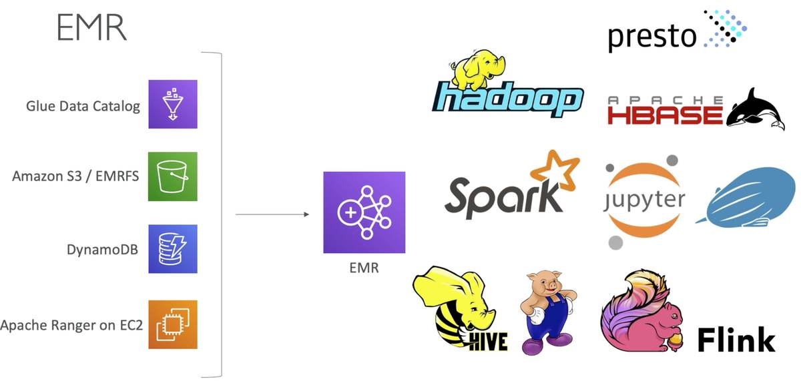
UseCases: (jack of all trades framework which can do lot of what can also be done using ES, Glue, KinesisAnalytics, ML, etc – but think Big Data / really large ‘big’ data and is distributed)
Log Processing / Analytics
ETL
Clickstream Analysis
Machine Learning (using Spark)
Don’t use EMR if datasets are small or if ACID transaction requirements
Hadoop
Hadoop (Core) Arch: Hadoop software library is a framework that allows for distributed processing of large datasets across clusters of computers using simple programming models – designed to scale from single servers to thousands of machine with local computation and storage
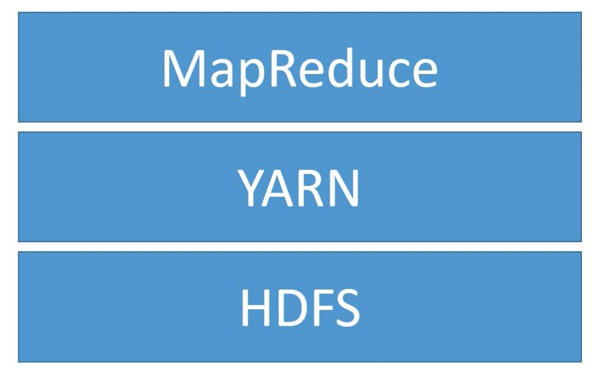
HDFS – distributed scalable file system/storage – data on same node – so is faster / high throughput – con is this makes data ephemeral – data is replicated – fault tolerant
MapReduce – brains - process vast amount of data in parallel on large clusters of commodity hardware in a reliable fault tolerant manner. Its maps and reduces! MapReduce is not popular these days (coz Spark). Map Reduce under the covers consists of Input – Split – Map – Shuffle – Reduce – Result.
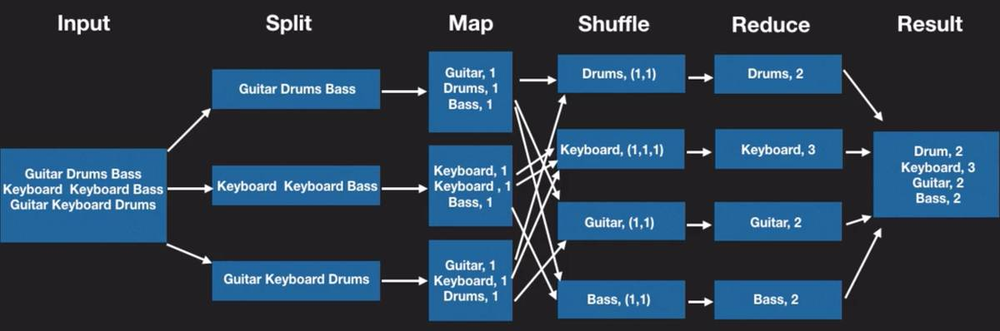
YARN – Yet Another Resource Negotiator – what gets runs where. helps with cluster resource management and job scheduling. YARN also provide a common Hadoop framework for a variety of apps (not just MapReduce) to simultaneously access HDFS
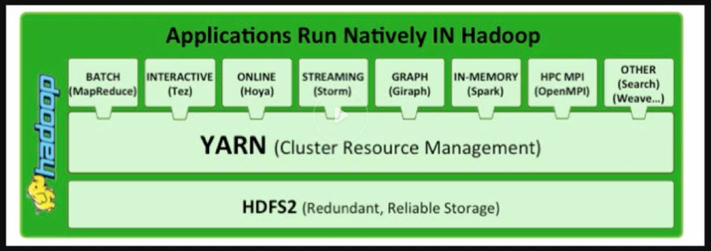
Hadoop Common – Hadoop core libraries / utilities – not show in diagram above
EMR
Basically EMR cluster is a collection of EC2 nodes (Master + Core Node + Task Node). Master manages the cluster – is mandatory – runs on EC2. Core Nodes runs tasks (data analysis) and hosts data (in HDFS or EMRFS). Task Nodes does not store data – utilized just for running tasks. Task Nodes can be utilized for scaling during peaks.
Note: EMR cluster is within a single AZ concept. Replicating data across AZs is tough!
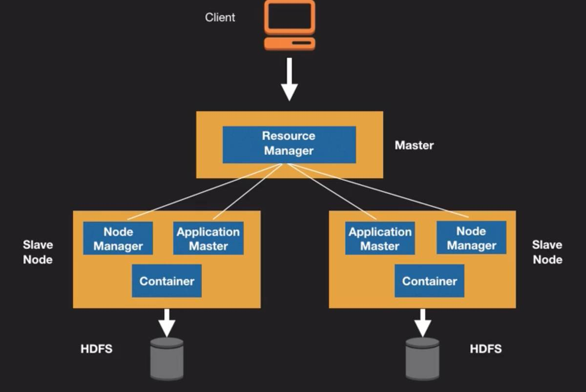
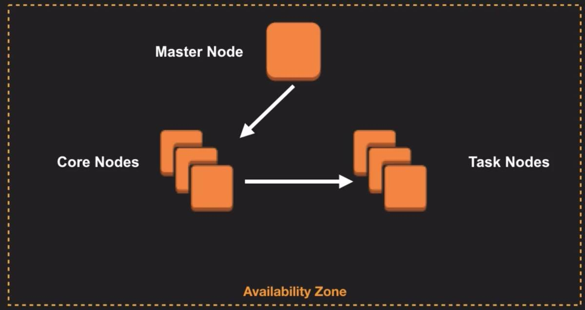
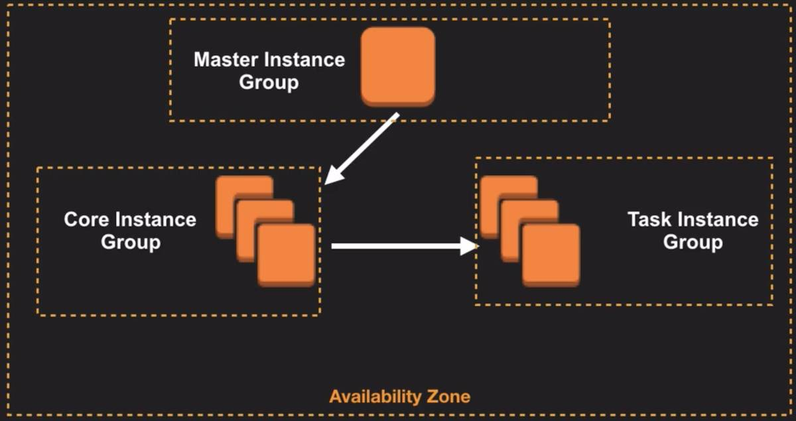
Master Node: a.k.a “name node” Single master node – Manages the resources of the cluster – coordinates distributes and parallel execution of MapReduce executables – tracking and directing against HDFS in core nodes – Resource Manager (component of YARN) is a scheduler that manages as an example scheduling work across both MapReduce and Spark apps that might be running simultaneously – monitors health of core and task nodes
Core Node: a.k.a “data node” - Run tasks as directed – store data in HDFS (or in S3 using HDFS) – Data Node daemon runs on the core node – Node Manager / Application Manager work in tandem with the Resource Manager to manage, execute and monitor work that runs in the containers.
Task Node: similar to code node / but used only for compute / no storage (HDFS)
AWS EMR has advantages from standpoint of being able to easily integrate with other services. Major ones being -> EC2 for hosting, VPC, S3 (input/output data), CloudWatch, IAM, CloudTrail, Data Pipeline.
EMR Storage Detailed
HDFS: Typical Hadoop systems utilize HDFS – distributes data (files) across different nodes in the cluster – multiple copies on different nodes for redundancy (default replication factor is across 3 nodes – set in hdfs-site.xml file) – data is stored in blocks – large file gets split and stored across nodes (def block size is 64MB and max block size is 256MB). IMPORTANT -> Block sizes / Replication factor can be set per file.
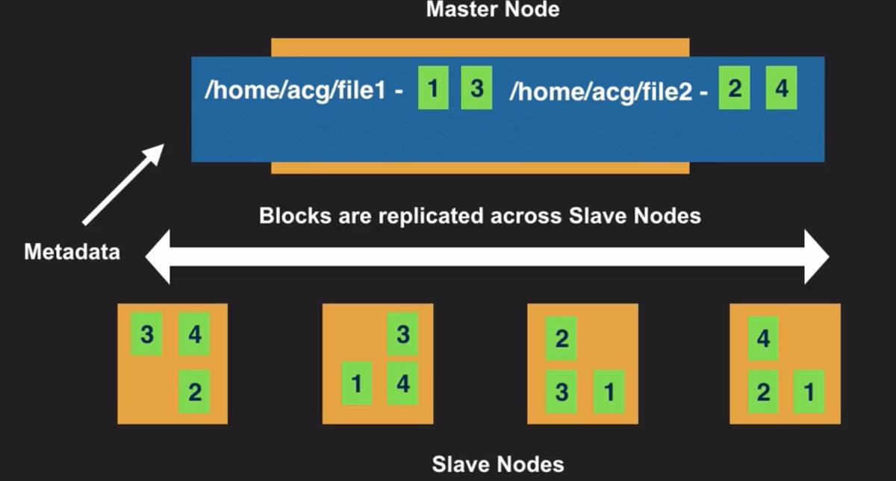
Local / Instance Store or EBS: The files can be stores on the Instance Store volumes or EBS - both are ephemeral / transient and are cleaned in the cluster is terminated – Local Store is an option in cases very high I/O performance or high IOPS with low cost – EBS is not ephemeral but it is in this case where the cluster is terminated
EMRFS: access S3 as if it were HDFS. Looks like HDFS but is actually S3 – advantage is the data is not ephemeral anymore when cluster is terminated / resized. EMRFS and HDFS can be used together using S3DistCp command which is optimized to work with S3.
EMRFS Consistency View: when S3 is brought in the picture then also we will also need to ensure data is safeguarded against multiple concurrent access. This is where EMRFS Consistency View helps and it does the transaction mgmt. (i.e. consistency) utilizing DynamoDB. S3 PUTS have read-after-write consistency but if a list (HEAD/GET) command is executed right after PUT then the new objects might not show up. Case of deletes it is eventual consistency so deleted files might show up. EMRFS Consistency View resolves these as well as when multiple app access occurs.
S3DistCP: using an S3DistCp command is the right thing to do to copy data from S3 into HDFS and then make sure the data is processed locally by the EMR cluster MapReduce job. Upon completion, you will use S3DistCp again to push back the final result data to S3
EMR Operations
EMR Releases: EMR provides two Hadoop distribution options: Amazon and MapR. Each release consists of combination of multiple different big data software components. There are 3 categories of components – 1) from open source community (relates to Hadoop/Spark, etc) and 2) open source components that amazon modifies and uses (communityVersion-amzn-emrReleaseVersion) and 3) components that are provided to just work with EMR (eg. EMRFS)
EMR Cluster Configuration: pre-built scripts and application can be utilized to be run within the cluster – configurations (quick or advanced option)
Configurations -> Edit Software Settings (example specify heapsize of code node) – define a custom step (hive script or custom jar file, etc)…this is executed right after the cluster is launched – steps can be added to a running cluster – steps can be programmed to terminate the cluster after execution – can chose which VPC cluster will be associated with + subnet determines AZs – if EMR is created in a private VPC then a VPC endpoint can be created for S3 data to be accesses – different instance types / counts / EBS volumes can be selected
Transient vs Long running cluster – spin up a cluster just to perform some analysis and then shutdown. Data is typically stored in S3 for transient clusters + Hive meta stored in the master node MySQL DB can be stored in RDS (MySQL) for being persistent across cluster runs. Opposite is long running clusters. Long running cluster utilized when using scheduled batch jobs (recurring) or if the data sets is super large (auto termination is turned off)
Instance type / Count Selection: MapReduce are batchy jobs (consider using general purpose instances M3 or M4) – ML are compute instance (P2 instances or C3 / C4) – Spark (known for in memory caching) so utilize R3 or R4 – high I/O IOPS using instance store or large HBase clusters utilize I2 or D2 – For master node with 50 core nodes or less use m3.xlarge or m4.xlarge and for master node with more than 50 core nodes use m3.2xlarge or m4.2xlarge – for core nodes EBS volume determine based on data size + replication factor (default is 3 for 10 nodes or plus and 2 for 4-9 nodes and 1 for lesser). Typically prefer smaller number of large / powerful nodes
EMR Monitoring / Re-sizing: use CloudWatch! – minimum is 5 minutes (cannot be changed to a shorter duration) – archived for 2 weeks
Built in dashboard provided by default by different apps can be access by using SSH tunneling for access publicly. Ganglia can be used also for monitoring which given information across the whole cluster.
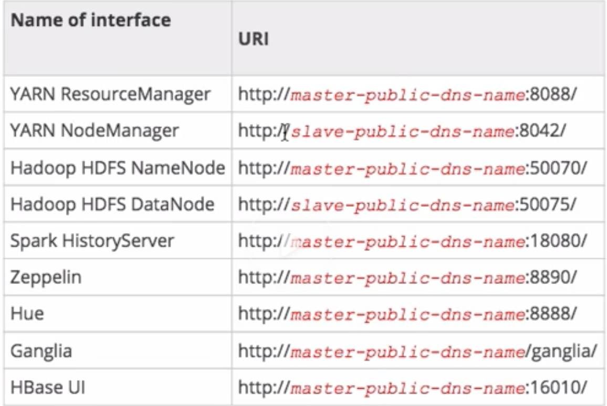
Resizing: can re-size manually or automatically using Auto Scaling. Manual for task nodes is straightforward, for core nodes the data in the core nodes is moved to the other nodes…so be cognizant of storage. AutoScaling…does what it is meant to
EMR Compression: Required for between perf as less data is transferred between S3, mappers and reducers. File formats supported by EMR -> Text(CSV/TSV), Parquet, ORC, Avro, Sequence, etc –
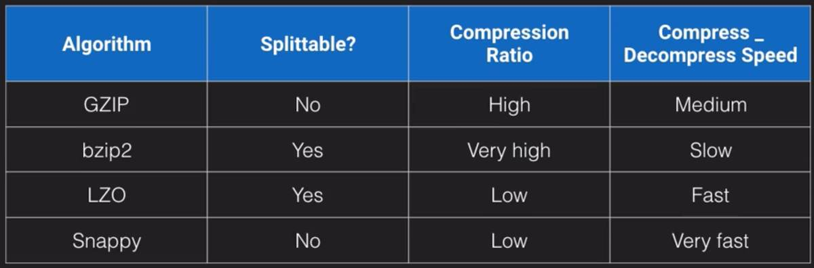
GZIP files are not splittable so keep them in the 1-2GB range – avoid smaller files / plan for fewer larger files – S3DistCP can be used.
Spark
Spark widely used instead of MapReduce – for processing massive data sets – uses in memory caching instead of on disk (but can also run on disk. 100x times faster than MR in memory mode and 10x times faster when running on disk) - utilizes directed acyclic graphs to optimize query execution for fast analytical queries – supports APIs for Java, Scala, Python, SQL and R – Spark can run standalone but is typically run on Hadoop framework to get benefits of YARN/HDFS.
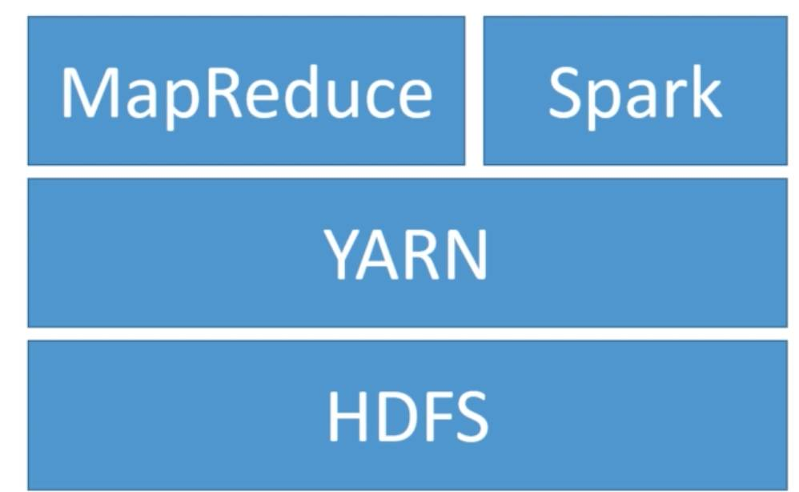
Usecases:
Interactive Analytics ([Spark SQL] - Data Scientists utilize this heavily)
Structure Streaming (Spark2.0) – [Spark SQL] run queries against live data
Stream Analytics / Processing ([Spark Streaming]from disparate sources)
Used heavily for running Machine Learning ([MLLib])
Data integration / ETL (bring in the scaling advantages of Spark for ETL)
Not for OLTP or for batch processing (super large) or for large multi-user reporting environments with high concurrency
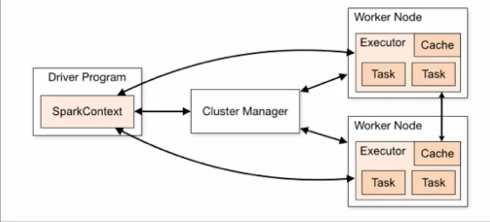
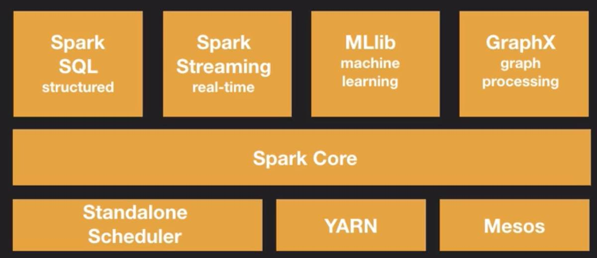
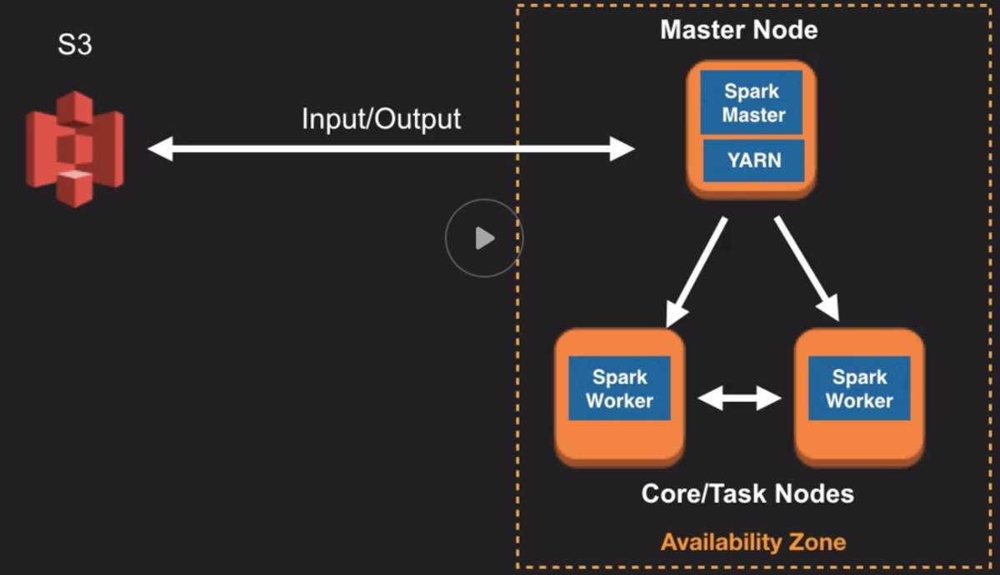
Spark Core: Spark core that takes care of memory management, fault recovery, scheduling, distributing and monitoring jobs, and interacting w/ storage systems. “Resilient Distributed Datasets” (RDDs) – logical collection of data partitioned across machines – “Data Set” is a distributed collection of data – “Data Frame” is a dataset organized into columns
Spark Streaming: streaming analytics – data ingested in mini batches – analytics logic similar to batch processing so the same logic can be used for batch and micro-batch data. Note: for real-time analytics (not streaming / micro-batch) utilize Kinesis Analytics.
Spark Streaming supported windows of time – There are libraries for Spark to easily integrate with Kinesis (Spark Datasets built on top of KCL) and Firehose (Spark Datasets from Redshift) – The power of Spark’s scaling can be utilized for performing the analytics
Spark SQL: distributed query engine for low latency interactive sql – columnar data storage – can import data from multiple different sources (Avro, Parquet, Json, ORC) – has a construct known as dataset
MLLib: OOB library of scalable algorithms to do classification, regression, clustering, pattern mining – from different sources
GraphX: process graph structures / relationship (social network) processing
Spark integrates easily with Kinesis Streams, Redshift and Dynamo DB.
Spark streaming provides a high level abstraction called DStreams (Discretized streams)which represents a continuous stream of data. DStreams can be created from Kinesis Streams – DStreams internally is a collection of RDDs (Resilient distributed datasets), transformations can be applied and results published to HDFS, DBs, DWs or dashboards – Spark streaming used KCL underneath to consume data
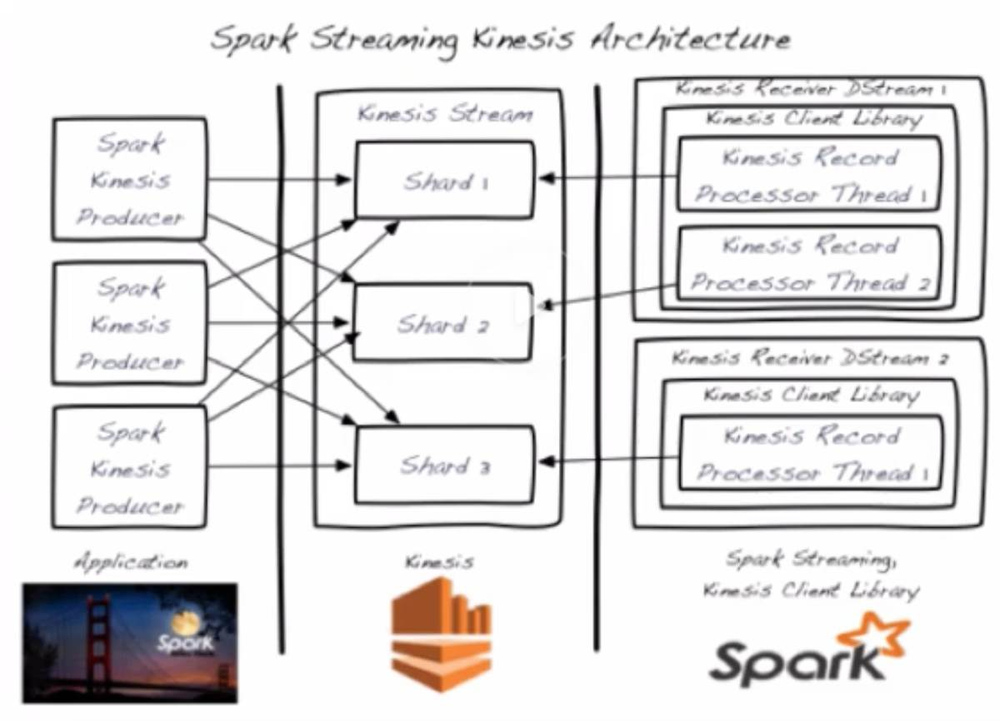
Integration of Spark and Redshift is done using Databrick’s Spark-Redshift library. Redshift to Spark -> the library executs Redshift UNLOAD command -> Files are read into S3 -> Spark SQL Dataframe is generated -> Dataframe is registered as a temp table -> queries can then be executed
Hive / Pig / HBase / Presto
Hive (Hive on EMR): Hive is Data Warehouse infrastructure built on top of Hadoop which helps to summarize, query and analyze very large datasets using SQL like statements (HiveQL) across DB stores and HDFS – sits on top of MapReduce or more often on top of Tez. More used for data warehouse / OLAP type applications. Hive is not for OLTP. Easily integrates with DynamoDB for transferring data vice versa and for cross joins – Hive QL goes beyond standard SQL, with first-class support for map/reduce functions and complex extensible user-defined data types like JSON and Thrift.
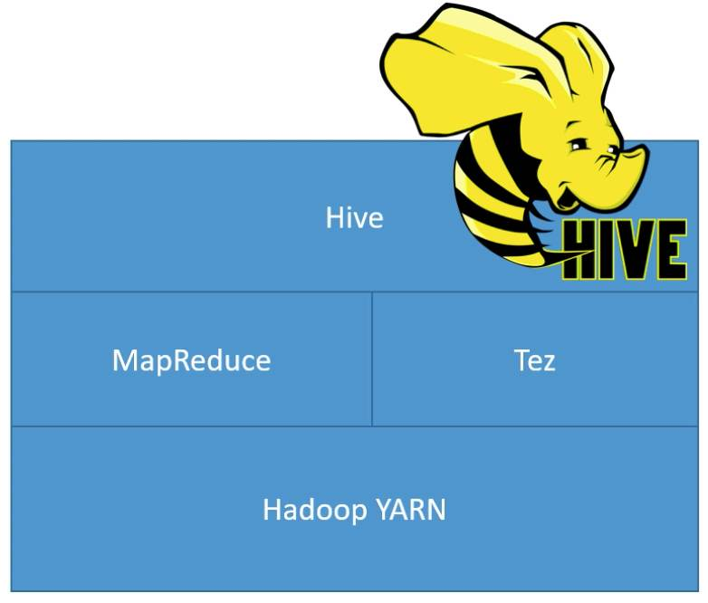
Hive Metastore: at the end of the day Hive tries to provide structure for unstructured data – this data is stored / maintained in the Hive Metastore (typically stored in a MySQL db on the master node) - also supports external storage (RDS) for better resiliency / integration / availability / DR – AWS Glue Data Catalog also provides same metastore function so it can be used as the Metastore for Hive (and other apps).
Pig (Pig on EMR): came up as an alternative interface for MapReduce – introduces PigLatin – SQL like syntax – highly extensible – like Hive sits on top of MapReduce (or Tez or Amazon EMR) – older technology – not used nowadays – preinstalled on EMR
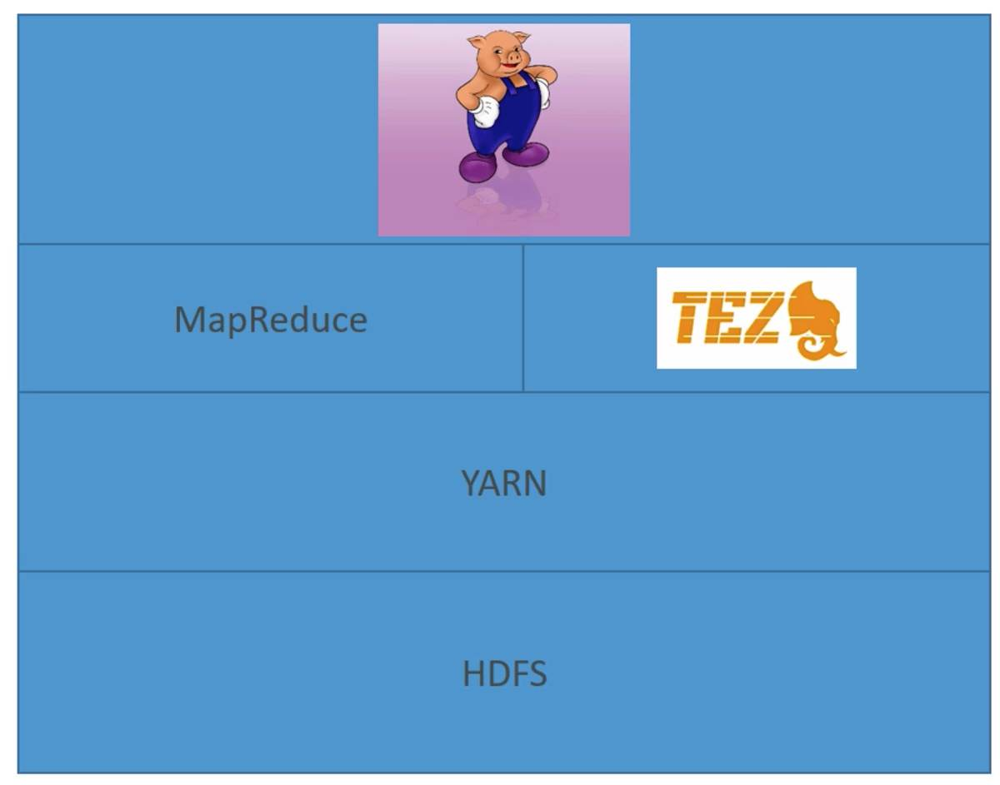
HBase: non-relational NoSQL petabyte scale scale DB – based on Google’s BigTable – Big Table was on top of the Google file system but HBase is on top of HDFS (or can on S3)– integrates with Hive – AWS Equivalent DynamoDB – Cons (DynamoDB – managed service) Pros (efficient at storing sparse data – good for high frequency counters requiring consistent reads/writes – best for high write and update throughput/scenarios…so better for writes/updates) – used by AdTech / Facebook – preinstalled on AWS EMR – not suitable where a relational DB will do better – differences w/ DynamoDB
Presto: Connects to many different types of disparate/databases/stores in the cluster and enables to write sql queries across then – interactive queries at petabyte scale – optimized for OLAP – originally developed by Facebook - – preinstalled on AWS EMR – AWS Equivalent is Athena – Presto connectors {HDFS, S3, Cassandra, MongoDB, HBase, SQL, Redshift, Teradata} – faster than Hive - Athena → Managed services version of Presto – not appropriate for OLTP or batch processing, or very large rows (100million plus – use Hive instead)
Should not be used -> not for OLTP | joining very large (100M plus rows) – use Hive instead | Batch processing
Other
Zeppelin: pre-installed on AWS EMR – hosted iPython notebook – collaborative. Widely used for running Spark jobs – can also visualize results using charts – can also write SQL to run on Spark SQL.
EMR Notebook: AWS’s equivalent – stored on S3 so persistent – access only through the mgmt. console
Hue: Hadoop user experience – front end for entire cluster – integrated with IAM – comes with Hive and Pig query editors – can save frequently used queries – can be used to access Hive meta store whether it is on the master node or on RDS – also built in HBase browser – Zookeeper browser – view server logs – Oozie dashboard to schedule EMR jobs and Sqoop jobs – integrates with LDAP, OpenID, OAuth, SAML, etc
Splunk: another operational tool for visualizing the EMR cluster
Flume: Another way of streaming data into the cluster – primary for log data
MXNet: alternative to Tensor flow – included on EMR – for deep learning applications
Other
Step Functions
Very similar to Data Pipelines – used to design workflows – visualize these workflows – advanced error handling and retry mechanism – audit of workflows – maximum lifetime of a workflow is 1 year.
Steps Function are written using Amazon States Language (ASL) – JSON based
Examples: # train a ML model: generate date set by kicking a lambda function -> trains the model using SageMaker -> on completion saves the model -> and applies the model on some data # utilize to tune a ML model: same process but tunes the model by changing the hyperparameters # utilize to manage a batch job: monitor and alert if the batch operation passes or not
Data Pipeline
cron / scheduler type functionality used to move data between compute and storage services – ex: load log files on a configured amount of time and load into S3 and then say a weekly basis load the data into EMR for analysis - also used for data movement on on prem data sources– in this case need to install task runner on prem - pipelines runs on EC2 instances or EMR clusters behind the scenes
One important use is for moving data from one region to another – example DynamoDB data moved from one region to another
Pipeline consists of
Data Nodes – end destination for data
Activities – actual stuffu
Preconditions – readiness check that can be associated with a data source or activity – example -> DynamoDbDataExists, DynamoDBTableExists, S3KeyExists, S3PrefixExists, ShellCommandPrecondition (custom pre-conditions)
Schedule – when / frequency
Machine Learning›
Overview
Few Examples -> How much will a house sell for? What is this picture of? Is this biopsy malignant or benign? Is this financial transaction fraudulent?
Supervised Learning: Supervised machine learning systems are trained i.e. needs to be trained on historical data. This data is called the ‘training dataset’. The property we want to predict is the ‘label’. What gets built is the ‘model’. The model can essentially be used to predict unknown labels based on new data.
Train / Test: The training dataset is typically (randomly) split into training and test data. The test data can be utilized to test the accuracy of the supervised model. The ‘accuracy’ of the generated model can be tested using the test data
Basic Model types:
Liner Regression (what price will this house sell for? when will the machine fail?)
Logistic Regression (basically predict classes)
Multiclass Classification (what is the picture of?)
Binary classification (is the biopsy result malignant? Is this financial transaction fraudulent?)
Confusion Matrix: a way to visualize the accuracy of multi-class classification model
Hyperparameters: model parameter (knobs and dials) that can be tweaked to get the most accuracy. The tweaking is called hyperparameter tuning.
Learning Rate – how quickly we move from one iteration to another
Model Size -
Number of passes -
Data Shuffling – to randomize data
Regularization – scaling data to common range
Amazon ML Service (NOW DEPRECATED): Fully managed service - More examples -> fraud detection, forecast product demand, personalization (recommendation), predict user activity, classifying social media (bad tweets, sentiment analysis, etc).
Some limitations -> training data only up to 100GB – not more than 5 simultaneous jobs (can be increased by support ticket). For really large data sets use EMR / Spark as alternative – anything out of regression (logistic / linear regression) is not for Amazon ML (like sequence prediction / deep learning, etc)
SageMaker: Build -> Train -> Deploy – Jupyter notebooks – preloaded w/ CUDA, Anaconda packages, libraries for TensorFlow, PyTorch, MXNet, etc – some of newest reinforcement leaning algorithms – train at scale (clustered + faster) – inference pipeline – SageMaker Neo (push models to the edge) – fully managed – hyperparameter tuning jobs (automatically tune hyperparameters)
Data Analysis›
Kinesis Analytics
System for querying streams of data continuously – very similar to Spark Streaming but works with only Kinesis Data Streams or Kinesis Data Firehose
Can talk to only Kinesis Streams and Firehose (source & dest) + Lambda (dest only)
Default capacity of processing in terms of memory – 32GB
Common use cases
Streaming ETL
Example -> continuously receives IOT data, organize by sensor type, remove duplicate data, normalize the data for a specified schema and then send the data to for further processing to S3
Continuous Metrics Generation
Example -> live leader board for an mobile game by computing the top players each minute and then sending the info to DynamoDB
Example -> website traffic by calculating the number of unique visitors every 5 minutes and then sending info to Redshift for further analysis
Responsive Analytics
Example -> generate the success percentage of a customer facing API over time and sending the results to CloudWatch
Example -> looks for events (say deals) that meet a select criteria and then sending automatic notifications to a set of customers
Kinesis Analytics – Queries:
Continuous Queries: A query that runs constantly over a stream looking for a condition to be fulfilled. Ex temp or stock price over set value. Think – point in time
Windowed Queries:
Sliding Windows: you know this
Tumbling Windows: windows that is not sliding. 60s window means every 60s events in last 60s are emitted. Then next 60s starts. fixed time interval
Stagger Windows: to improve the accuracy of analyzing time related records this type starts the window when the first event matching the partition key arrives and not on a fixed time interval. Utilized to handle out of order arrival of messages. Think multiple overlapping windows. Stagger window ideal for aggregated log analysis
Kinesis Analytics – Random Cut Forest: SQL function offered for anomaly detection on any numeric columns in a stream. For identifying outliers in the dataset/ stream
Amazon ElasticSearch
System for peta-byte scale analysis and reporting – origin as a search engine but more for analysis / visualization / reporting these days especially on log data – part of the larger ELK stack built on open source solution Lucene – ElasticSearch is fundamentally a scalable version of Lucene…by distributing horizontally
Fundamentally a search engine – you can send a json style request to index a document – then send another request to search for documents that contain certain keywords or attributes / or some fuzzy matching
Does not have to be just documents – can be unstructured data as well (best example: log files). Ways to import data into ES: Kinesis / DynamoDB / Logstash and Beats / ElasticSearch native APIs
ELK Stack: ElasticSearch (search engine) + Kibana (visualization) + Beats/LogStash (data pipelines – note Kinesis can be used too)
Major use cases (all of the below essentially fall under analyzing log data which is the niche Elastic Search goes after)
Full Text Search
Log Analytics
Distributed Document Store
Real-time Application Monitoring
Security Analytics
Clickstream Analytics
ElasticSearch concepts:
Documents: basically document storage and retrieval engine – not limited to text – can be structured json – every document has a unique identifier – every document has a type
Types: types define the schema and mapping shared by documents that represent the same sort of thing (a log entry – an encyclopedia article, etc) – this is being deprecated
Indices: an index powers a search into all documents within a collection of types – they contain inverted indices that let you search everything within them at once – one index per type currently
Fully managed but not serverless (like EMR) – you will need to provide the count and instance type for the master node. Amazon ES created daily snapshots to S3 by default…you can configure this to be more often if required
Dedicated master node / Data nodes (diff instance types) – “Elastic Search Domain” a.k.a cluster – snapshots to S3 – Distribute nodes across AZs – AWS Recommended to have 3 master nodes (1 active and 2 passive)
Cognito typically used to provide end users access to Kibana. ES runs within a VPC. Options for access are – Nginx reverse proxy on EC2 forwarding to EC2 domain or SSH tunnel for port 5601 – VPC Direct Connect - VPN
Lambda can be utilized as a pre-processing tool before feeding to ElasticSearch.
Ex: convert apache log files to json format along with needed data format conversion.
Not for OLTP - not for adhoc querying / use Athena instead - remember primarily for search / analytics
Athena
interactive query service for S3 (SQL) – no need to load the data it stays in S3 – “Presto under the hood” – fully managed – basically enables data in S3 to be queried as how we would query a relational database using SQL. Typically used to view / query the raw data in S3, etc before loading into RedShift i.e. query staging data
Supports many data formats:
CSV / TSV (simple - human readable)
JSON (simple - human readable)
ORC (columnar, splittable…split and view across instances)
Parquet (columnar, splittable…split and view across instances)
Avro (splittable…split and view across instances)
does not really matter if the data in unstructured, semi-structured or structured….Glue can be utilized to provide structure – generate a data catalog
Examples: Ad-hoc queries of web logs (AWS wants you to use this over ElasticSearch) – analyze CloudTrail, CloudFront, VPC, ELB logs (only req is data needs to be in S3) – integrates w/ Jupyter, Zeppelin, RStudio notebooks and with QuickSight – integration with odbc/jdbc interfaces
billed for successful or cancelled queries – not for failed queries or for DDL statements – you can save lots of money by converting data to columnar format (eg. ORC and Parquet) – partitioning data intelligently also reduces cost
not for highly formatted reports or visualization (use QuickSight, ES, QuickSight instead) – not for ETL (use Glue instead)
Redshift
Petabyte scale fully managed data warehouse (OLAP not OLTP) – 10x better performance than others! – ML based optimizations Massively parallel query execution (MPP) – columnar storage – uses high performance disks – super cheap / no upfront costs – block size 1MB – single AZ only deployment – ANSI SQL Compatible – “Shared Nothing” Architecture between the nodes
How Fast Performance: MPP + Columnar Data Storage + Column compression.
Columnar Database – getting data in should be thru batch operations / super-fast in this case – single line inserts should be avoided since insert will need to add data across multiple files - given in columnar DB all data stored / types (for a single column) is homogeneous easy to compress the data thereby reducing space –
Just like single line inserts not for needle in a haystack queries – not for small amount of data – not for BLOBs – and of course not for OLTP
Easy integration w/ visualization and sql based clients (ojdbc/jdbc) - Easy to scale – built in replication (for availability) and backups (durability) – easy monitoring with CloudWatch – custom metrics – cluster / performance monitoring
Indexes or materialized views are not used so uses lesser space than traditional DB
Major Use cases:
Accelerate analytics workloads
Unified data warehouse and data lake access
Examples:
Analyze global sales data
Store historical stock trade data
Analyze ad impressions and clicks
Aggregate gaming data
Analyze social trends
Redshift Architecture:
Cluster: A cluster is the core infrastructure component of RedShift DW – consists of a ‘leader’ node and one or mode ‘compute’ nodes (max is 128) – each cluster can contain one or more databases – user data is stored on the computer nodes.
Leader node: acts as a gate with the SQL clients – mediator between clients and the compute nodes – receives queries and (parses queries + generates execution plans + coordinates with compute nodes to perform parallel execution + aggregates and return results)
Compute nodes: executes steps of the execution plan, coordinating with other compute nodes and finally sending results back to the leader node – each compute node has dedicated compute, memory and attached disk storage. Two types of compute nodes can be chosen during provisioning 1) Dense storage DS [HDDs] or 2) Dense Compute DC [SSDs]) – for both types there are large or 8xlarge choices.
Within compute node there are node slices – to process chunks of data – a portion of the compute mode CPU and disk space is allocated to each node slice
Redshift Table Design: Follows Star Schema which is the simplest style of data mart and is mostly widely used to develop data warehouses and data marts – The Star schema consists of one or more fact tables referencing any number of dimension tables. Other flavor is Snowflake schema design
Note: Transaction Performance Processing Council (TPCH) dataset is a standard / typically utilized to do performance benchmarks between databases / DWs
Redshift Distribution styles: how the data is distributed across the different compute nodes and slices – this is mentioned when creating the table – the two goals of distribution is to distribute the data evenly across the cluster and minimize data movement during query execution
EVEN: regardless of values leader node distributes ROWS in a round robin fashion – this is the DEFAULT distribution style
KEY: all data (i.e ROWS) are distributed based on matching columns / values – related/matching data are all stored physically closer. Example – if two tables are joined using a order_id columns the order id values in table1 and table2 are co-located in the same node slice / compute node
ALL: copy of the entire table is distributed across all nodes – takes longer to insert – is utilized only for data that does not change – for slow moving tables i.e. data that does not change much
Tables used in joins use KEY distribution – large fact tables in a star schema use KEY distribution – no joins / reduced parallelism and where KEY and ALL or not a clear choice use EVEN distribution – data does not change or small sized ( a few million rows) or no common distribution key then use ALL distribution style
RedShift Sort Keys: similar to indexes in relational DBs – when creating a table then one or more columns can be denoted as sort keys – when data is loaded then rows are stored in a sorted fashion so enables efficient handing of range restricted predicates….the query processor can use the min and max values can be utilized to rapidly skip over large number of blocks during scan
Example: If recent data is queried more often then timestamp column is chosen as the sort key | If frequent range or equality on a particular column then use that as the sort key | if tables are frequently joined then utilize the join column as the distribution and sort key
Sort Key Types:
Single (ex: querying primarily by date)
Compound (made up of more than one sort key – this is the default sort type – used in cases of conditions and joins – primary sort column and secondary sort column – order matters) – primary sort key has more weightage than secondary sort keys
Interleaved sort key (equal weightage to all columns in the sort keys) – great and use only on very large tables (>100 million rows) – think 3 index tables copies w/ each sorted by movie_id and movie_name and movie_genre
RedShift Compression: storing less data on disk → reduces cost. also reduces I/O for faster performance. Automatic Vs Manual way to compress – AWS recommends Automatic mode.
Automatic Mode: create DDL -> use COPY command to load data: behind the scenes -> data is loaded (first time) -> run analyze compression command -> determine types of encoding needed -> drop table -> recreate with encodings -> reload data
Manual mode: same as above but run command ‘analyze compression table_name’
RedShift Data Types / Constraints: https://docs.aws.amazon.com/redshift/latest/dg/c_Supported_data_types.html
CHAR / VARCHAR are stored as ‘bytes’ not characters – CHAR range / max length 4096 bytes and VARCHAR 65535 bytes – If columns are too wide that is more size has been defined that what is actually used then this has a performance impact
Note: Things to note is all the constraints above except NOT NULL are not enforced –– only if the application enforces constraints – more often that data that comes to RedShift has already flown through an OLTP DB where constraints are enforced – why use them…so used for informational purposes and to generate more efficient query plans, so does help performance
Import / Export Data to RedShift (COPY/UNLOAD/DBLINK): most efficient way is to use the COPY command – read from multiple data files or from streams simultaneously (from S3, EMR, DynamoDB, EC2 instance or remote DB using SSH).
Break large files (think multiple GBs) into smaller files for faster parallel loads. Here the number of files to be broken into should be equal to the number of slices in the cluster or a multiple for most efficient load. After breaking files and utilizing compression use range of anywhere from 1MB to 1GB for the files
Most common scenario is moving data from S3 to Redshift.
Integrate w/ S3, DynamoDB, EMR/EC2 hosts, Data Pipeline, Database Migration Service, Lambda, Quick Sight and of course Kinesis Firehose
Data file formats: CSV, Delimited, Fixed Width, JSON, Avro
COPY Command: COPY us utilized for loading large amount of data from external sources – if the data is already in Redshift then utilize INSERT INTO….SELECT or CREATE TABLE AS commands. COPY command can decrypt data on the fly while copying – COPY command can also speed things up by compressing the data during the operation – Automatic compression is also an option
COPY with NOLOAD parameter to COPY without actually loading the data (can be utilized to detect errors/rollback – STL_LOAD_ERRORS & STL_LOADERROR_DETAIL)
COPY Manifest Files: These are json files that contain information on what data has to be loaded from S3 (load selective files from a bucket – from diff buckets – prefixes)
COPY Encrypted data: Using COPY command you can load encrypted files from S3 where the following encryption was applied…(SSE-S3, SSE-KMS, Client side encrypted file). NOT SUPPORTED are SSE-C, client side encryption with SSE managed master key and client side encryption with asymmetric master key
copy customer from 's3://mybucket/encrypted/customer'
Cross Region COPY example -> copy snapshot from RedShift from one region to another for backup purpose – source KMS encrypted RedShift cluster. First you need to create a KMS key in the destination region and then set up a snapshot copy grant. Back in the source region enable copying of snapshots using the copy grant created.
UNLOAD Command: Export data into S3 then utilize UNLOAD cmd (Redshift -> S3).
UNLOAD by default uses SSE-S3. Additional options below with UNLOAD ENCRYPTED…automatically stores data encrypted using client side encryption and uses HTTPS to encrypt the data during the transfers to S3. Can UNLOAD encryption using SSE-S3, SSE-KMS, Client side. NOT SUPPORTED is SSE-C
DBLink: extension to connect RedShift to PostGres (standalone or on RDS)
Performance Optimizations
Redshift Work Load Management (WLM): helps prioritize query execution - ensure say that short queries are not stuck behind slower long running queries – queries are classified into query queues / service classes and then specifying priorities. 2 classes:
Automatic WLM: default 5 queues but can set up upto 8 queues – the concurrency is automatically adjusted based on long or slow running queries. Following levers can be tweaked: 1) priority 2) concurrent scaling mode 3) priority for user groups 4) query groups can set labels for set of queries and then prioritize 5) query monitoring rules (ex: terminate a query if more than x seconds)
Manual WLM: same but manual – 1 default queue and 8 max queues with a concurrency level 50. Very similar to Automatic WLM just that you are doing everything by hand
Static WLM properties: User Groups / Wildcard / Query Groups / Wildcard
Dynamic WLM properties: Concurrency / Percentage of memory per queue / Timeout
Concurrent Users Limit: 500 (i.e total number of DB connections)
Default Concurrency level for user defined queue: 5
Max Concurrency Level for user defined queues: 50
User Defined queues Max: 8
Super User Queue: 1 (special queue for admin to get in and resolve)
Short Query Acceleration: Alternative to WLM if you want to prioritize short running queries ahead of long running queries – short queries get their own space / queues – works by using ML i.e. how long will a query take and then allocate to the short query queue – how short is short is configurable
Redshift Maintenance and Operations
Default port number: 5439
Enhanced VPC Routing: utilize VPC for the import/export instead of thru the internet for the transfer
Vacuum command: Recovers space from deleted rows. Vacuum is I/O intensive so use during slow periods. Vacuum command is not recommended for tables over 700GB. If this is the case then utilize deep copy i.e. recreate table with a bulk insert that automatically re-sorts the data (one way is: create temp table -> copy from original to temp -> drop original -> alter rename temp to original name. this is the best / fastest way to deep copy)
VACUUM FULL: default / re-sort the table and reclaim space from deletes
VACUUM DELETE ONLY: just reclaims no sort
VACUUM SORT ONLY: just sorts not reclaim
VACUUM REINDEX: re-initializes interleaved indexes then performs a VACUUM FULL
Scaling: automatically add cluster capacity specifically to handle sudden increase in concurrent reads – workload management (WLM) queues can be utilized to route queries that can take advantage (based on if they are bursty)
Resizing RedShift Clusters: For beyond concurrency scaling when you need to add more capacity to the overall cluster. 2 ways –
Elastic Resize: automatic – much faster
Classic Resize for more involved when we want to change the node types as well. As operation can take hours / days. There is an option to snapshot based resize so you spawn a temp cluster just for reads during the classic resize
What happens behind the scenes on a cluster resize: target cluster created -> source cluster goes into read only mode / connections terminated -> copy from source to target -> DNS re-routing -> source cluster is decommissioned
Durability: replicates all of the data – 3 copies of the data is always maintained (original compute node + one additional replica copy + periodic backups into S3) – for DR can also backup in another region – manual backups/snapshots or can enable automated backups with default 1d retention – max 35d retention – or 0 days (off).
Cross Region Snapshots: possible + also with encryption i.e. cross region KMS encrypted snapshots.
In the event of a AZ outage then will need to wait since Redshift cluster can operate in only one AZ currently…however a new cluster can be provisioned from backup in a new AZ
Monitoring / Tuning: using CloudWatch / custom tools available for added monitoring / tuning
RedShift Spectrum : query exa-byte of unstructured data in S3 – utilized when you want to go and query across your unstructured data (in Data Lake/S3) and structured data (in DW/Redshift) – supports many data formats CSV, JSON, Paquet, ORC, Avro, TSV, text, etc – supports gzip and snappy compression
New Features:
RA3 Nodes: scale compute and storage resources independently
RedShift data lake export: unload RedShift query into S3 in Parquet format
Data Visualization›
QuickSight
BI and visualization tool in the cloud – focused towards end users – more for business analysts than developers to get insights from data – serverless – more for ad-hoc so can’t be used for highly formatted canned reports
Rudimentary ETL operations – column name changes / change data types
Be it any source the datasets are imported into SPICE (Superfast Parallel In Memory Calculation Engine) – uses in memory, columnar storage, machine code generation – each user gets 10GB of SPICE – scales to 100s of thousands of users
Use Caseses:
Interactive Ad-hoc exploration and visualization of data
Generate dashboards and KPIs
Stories (Guided tours through specific views of an analysis)
Analyze visualize data from above mentioned sources + SaaS apps like Salesforce
Standard and Enterprise Edition: with Enterprise edition you get Active Directory based authentication + encryption at rest. In Standard Edition…you can invite an IAM user or you can invite an user through email
QuickSights ML Insights: ML powered anomaly detection (uses Random Cut Forests) – can do forecasting using ML (also used RCF beneath the covers) – Autonarratives (adds a “story to your data”) – Suggested Insights (ready to use suggested insights)
Web based Visualization options / publicly facing -> D3.js, Chart.js, HighChart.js Note-> main distinction these are web based and publicly facing – visualization tools are more internal to the company
Visualization Types:
AutoGraph: automatically figure visual based on data
Bar Chart / Histogram: multiple types (vertical, horizontal, stacked) for comparison and distribution (histograms)
Line Chart / Stacked Area Line Chart: changes over time
Pie Charts: aggregation / percentages
Scatter plots / Heat Maps: co-relation between 2 or more attributes. Heat map is the same but more 3 dimensional than 2
Pivot Tables: multidimensional data
Stories: Narrative or key points of an analysis
Bar Chart / Histogram
Line Chart / Stacked Area Line Chart
Scatter Graph
Heat Map
Pivot Table (bottom)
Newer types:
KPIs (how far along in a goal – business / financial relevance)
Donut charts (same as pie chart but can represent more than set of data)
Gauge charts (compare values in a measure: ex fuel or bandwidth test)
Tree Maps (hierarchical aggregation ex below mining exports)
encryption in flight (SSL) – ensures that they are no MITM attacks
server side encryption at rest – data is encrypted after being received by the server – a data key is utilized – the data key is managed typically by KMS
client side encryption – data is encrypted by the client – not decrypted by the server but by the eventual consumer – utilized Envelope encryption
AWS IOT Security
Authentication: Each connected device (thing) must connect to AWS IOT using a X.509 certificate (principal) – The certificate (principal) must be provisioned (using AWS IOT CA / using self-signed / using CA) at the get go and attached to the device (thing) - IOT policies are also created and attached to the principal (and indirectly to the device/thing)
Authorization: using AWS IOT policies (to/from AWS IOT services) and IAM policies (to/from AWS services).
AWS IOT policies (operations) is further divided across – control pane APIs for admin tasks and Data plane API for sending and receiving data from AWS IoT
IAM policies for users, groups and roles is also required when the AWS IOT services need to talk to other AWS services (exampe-> Rule action to send to firehose or write to DynamoDB)
KMS
preferred way for managing keys – utilized for encrypting data in EBS, S3, RedShift, RDS, SSM Parameter Store, etc – AWS manages the keys (customer master keys) – AWS does the encryption/decryption – KMS can only encrypt data that is max 4KB in size – for larger data utilize “Envelope Encryption” – can do only symmetric and not asymmetric encryption
Using KMS you can create keys, set rotation policies, disable keys, enable keys + use audit trail to check how keys are used using cloud trail.
3 types of Customer Master Keys: AWS managed service default CMK / User keys created in KMS / User Keys imported - you pay for API calls to KMS ($0.03/10k calls)
When SSE-KMS is utilized with respect to S3 then the encryption/decryption occurs on S3 – If you want to utilize SSE-KMS for encryption/decryption within you applications then you utilize Encrypt API / Decrypt API
Cloud HSM
alternative for KMS – AWS just provides dedicated / secure encryption hardware and all software (encryption/decryption/key mgmt.) is upto the apps – the CloudHSM hardware device is tamper resistant – supports FIPS 140-2 Level 3 compliance – Cloud HSM clusters are spread across multiple AZs – supports both symmetric and asymmetric software (unlike KMS which does only symmetric)
EMR Security
Security Groups – 2 types EMR managed security groups and custom – needs to be specified for master node and core/task nodes – many security groups can be assigned to the node types (example: when you want to attach a pre-defined security group to allow SSH access)
Roles need to be specified for the cluster – these again can be default or custom – default options are 3 (EMR Role – for EC2 access | EC2 instance profile access – for nodes to access AWS services | Auto Scaling role– for auto scaling).
EMR cluster can be run in a private subnet if security policies dictates such – in this case to access S3 then a S3 VPC gateway will also need to be defined
Encryption at rest / transit - For data encryption at rest on EBS/instance store 2 options exists -> Open Source HDFS / (Hadoop NVMe) encryption and LUKS (Linux unified Key Setp) encryption – for both of these options a KMS or custom key can also be configured and provided. In the case of EBS the root volume is not encrypted with the above options – so utilize EBS standards encryption offerings if root volume has to be encrypted as well. For S3 options or server side or client side (SSE-S3/ SSE-KMS/ CSE-KMS/ CSE-Custom
In transit transport between S3 and EMR is automatically encrypted using TLS – for other traffic i.e between say Hadoop, Spark, Tez a flag has to be set and certificates provided in S3 or custom zip file
encryption at rest files -> core-site.xml / hdfs-site.xml. For Tez the file updated is tez-site.xml file is update. For spark spark-defaults.conf file is updated
Hadoop encrypted shuffle: shuffle is the step between map and reduce steps where the data is shuffled across the different nodes – to encrypt in transit comm here 2 files need to be update -> core-site.xml / mapred-site.xml.
RedShift Security
Encryption in transit -> example SQL client connecting to RedShift cluster. Go to Redshift non default parameter store group change require_ssl parameter to true and then associate this group to the cluster – this uses a self-signed certificate that is present by default – as added level of security additional certificates can be configured.
Encryption at rest -> 2 options to manage keys -
using Key Management Service: 4 levels of keys are utilized (master key -> cluster encryption key -> database encryption key -> data encryption key)
using a Hardware Security Module (Cloud HSM and On-Prem HSM) – physical devices that safeguard and manage digital keys for strong authentication and providing crypto processing – HSM are used in cases where the organizational policies dictate such.For both Cloud and On-Prem HSM a trusted connection has to be set between HSM and Redshift
Note that when you are using encryption then data blocks, system metadata and snapshots are all encrypted and once encryption is enabled it can’t be reverted
Restricting access to tables -> create a view with a custom select statement -> create a group -> associate user to group -> grant view access to only this group
STS – Security Token Service
allows to grant limited and temporary access to AWS – token is valid for upto one hour (must be refreshed) – cross account access (allows users from one account access resources in another) – federation with Cognito and third party providers
Cross account access: define IAM role for another account to access -> define which accounts can access this IAM role -> use STS to get token (AssumeRole API) and impersonate the IAM role created
Federated Security / Identity Federation
Federation allows users outside of AWS to assume a temporary credentials for accessing AWS. These temporary credentials are linked to IAM roles that grant access to the AWS services (say a S3 bucket). Note: the user management is not done on AWS but is managed by the other system. The third part authentication provider can be –
LDAP
Microsoft AD (SAML)
Single Sign On
OpenID
Cognito
Forms of Identify Federation
SAML
Custom Broker
Cognito
SAML Federation: If you are a large company then you most likely have an AD or a SAML 2.0 already in place –
CLI Based Access
Mgmt Console Access
Custom Identity Broker: If a SAML 2.0 implementation is not in place – more effort – work – for enterprises but not SAML 2.0
Amazon Cognito – Previous diagrams are examples of corporate users either with SAML2.0 IDP or not – what about an app user then utilize a federated provider (google/facebook/etc) and then use federated identity within Cognito to get the necessary tokens- especially in the case of mobile applications where fine grained user permissions can be provided to an individual user – can use own identity provider or can use social / SAML / OpenID provider – can also use "Cognito User Pools” to scale to millions of users
With Cognito identity pools you can use user pools to add user registration and sign-in features to your application. Instead of using external identity providers such as Facebook, Google, or Amazon, you can use user pools to let users register with (or sign in to) an app using an email address, phone number, or a username. You can also create custom registration fields and store that metadata in your user directory. You can verify email addresses and phone numbers, recover passwords, and enable multi-factor authentication (MFA) with just a few lines of code.
IAM Polices Reference for Federated Security
Example case where you want to restrict in IAM policies for folder structures which are the same as the AWS username…in this case then you don’t need to have the usernames hardcoded – another example is if you want to have a queue per user and then provide access based upon queue name
same as previous but for federated users
CloudTrail
provide governance, compliance and audit for the AWS account – enabled by default – see who did what and when – first place we need to look say if something got deleted – only stores data for 90days
CloudTrail trails: CloudTrail trail can be created to pipe to S3 for further analysis - custom events to follow – so trail also is the way to store beyond 90 days default
VPC Endpoints
some AWS services (say SQS) are available on the open internet – let’s say that you want to access this from a private subnet within VPC – this is possible using NAT gateways/instances / Internet Gateway etc – the other option is to use a VPC endpoint. The 2 flavors are Gateway (S3 and DynamoDB) or Interface (all others)
Security across AWS Analytics Related Services
DATACOLLECTION
KInesis
DATACOLLECTION
SQS
DATACOLLECTION
AWS IOT
DATASTORAGE
S3
DATASTORAGE
DynamoDB
DATASTORAGE
RDS
DATASTORAGE
Aurora
DATAPROCESSING
Lambda
DATAPROCESSING
Glue
DATAPROCESSING
EMR
DATAPROCESSING
Kinesis Analytics
Covered previously
DATAPROCESSING
Elastic Search
DATAPROCESSING
RedShift
Sign-in credentials — Access to your Amazon Redshift Management Console is controlled by your AWS account privileges. For more information, see Sign-in credentials.Access management — To control access to specific Amazon Redshift resources, you define AWS Identity and Access Management (IAM) accounts. For more information, see Controlling access to Amazon Redshift resources.Cluster security groups — To grant other users inbound access to an Amazon Redshift cluster, you define a cluster security group and associate it with a cluster. For more information, see Amazon Redshift cluster security groups.VPC — To protect access to your cluster by using a virtual networking environment, you can launch your cluster in an Amazon Virtual Private Cloud (VPC). For more information, see Managing clusters in Virtual Private Cloud (VPC).Cluster encryption — To encrypt the data in all your user-created tables, you can enable cluster encryption when you launch the cluster. For more information, see Amazon Redshift clusters.SSL connections — To encrypt the connection between your SQL client and your cluster, you can use secure sockets layer (SSL) encryption. For more information, see Connect to your cluster using SSL.Load data encryption — To encrypt your table load data files when you upload them to Amazon S3, you can use either server-side encryption or client-side encryption. When you load from server-side encrypted data, Amazon S3 handles decryption transparently. When you load from client-side encrypted data, the Amazon Redshift COPY command decrypts the data as it loads the table. For more information, see Uploading encrypted data to Amazon S3.Data in transit — To protect your data in transit within the AWS cloud, Amazon Redshift uses hardware accelerated SSL to communicate with Amazon S3 or Amazon DynamoDB for COPY, UNLOAD, backup, and restore operations.Column-level access control — To have column-level access control for data in Amazon Redshift , use column-level grant and revoke statements without having to implement views-based access control or use another system.
DATAPROCESSING
Athena
VI S.ION
QuickSight
Course Project
Miscellaneous›
Overview
cases where EC2 instances in private subnet (with no access to internet) have to access DynamoDB then utilize VPC endpoint option
3 ways in which EMR optionally integrates HBase with S3 –
Storage of HBase StoreFiles and metadata on S3
Snapshot of HBase data to S3
HBase Read Replicas on S3
3 ways in which EMR optionally integrates Pig with S3 –
Loading custom JAR files from S3 with the REGISTER command
Submitting work from EMR console using Pig scripts stored in S3
Directly writing to HCatalog tables in S3
Redshift does not come with multi AZ redundancy – so “Spin up separate redshift clusters in multiple availability zones, using Amazon Kinesis to simultaneously write data into each cluster. Use Route 53 to direct your analytics tools to the nearest cluster when querying your data.”
DynamoDB & S3 are the only technologies that have VPC Endpoint “Gateways”, the rest are VPC “Endpoint” Interfaces.
Tableau / QuickSight etc are internal analyses tools – for publicly facing website use tools like HighCharts, D3, Chart.js etc
You want to load a 500GB file into Redshift w/ 10 nodes using COPY command – here we want to run the COPY command with maximum level of parallelism…so best option here is to split files in 10 of 50GB each and then run the COPY cmd
If question between sending data thru Kinesis immediately (critical events) or informational message utilize PutRecords API to immediately / synchronously send or utilize KPL send() to send asynchronously respectively
QuickSight is automatically integrated with CloudTrail – if enabled then the events can be backed up in S3 – If not only the most recent events can be viewed in history
AWS Instance families (DIRT MCG FPX)
Storage Optimized -> I / D / H SSD backed instance storage for low latency, very high random I/O performance and at low cost
Memory Optimized -> R / X for processing large datasets in memory (Spark!)
Accelerated Computing -> P / G / X use hardware accelerators / co-processors for intensive computing apps like floating point number calculations, graphics processing, pattern matching and Machine learning
Compute Optimized -> C batch processing, media transcoding, high perf web servers, dedicated gaming servers, ad servers and ML inferencing (not training)
General Purpose -> M / T
AWS KMS keys are specific to a region so if you want to port an encrypted EMR cluster from one region to another then you should create a new key in the destination region -> use CreateSnapshotCopyGrant to allow Redshift to use the KMS key from the destination region -> in the source region enable cross region replication and specify the name of the copy grant created.
If question includes a cost factor for storing / processing large sets of data do not choose long running EMR clusters as this is an expensive option. Anwser would just be plain S3 with appropriate processing / analytic tools
If question on how to optimize perf /costs on a DynamoDB table prefer GSI route as the other options table alters or LSI are not possible or are intrusive after initial table creation
If data delivery to your Amazon S3 bucket fails, Amazon Kinesis Firehose retries to deliver data every 5 seconds for up to a maximum period of 24 hours. If the issue continues beyond the 24-hour maximum retention period, it discards the data.
In circumstances where data delivery to the destination is falling behind data ingestion into the delivery stream, Amazon Kinesis Firehose raises the buffer size automatically to catch up and make sure that all data is delivered to the destination – point here Kinesis streams is not automatics but Firehose is…
Amazon Kinesis Firehose retries data delivery every 5 minutes for up to a maximum period of 60 minutes. After 60 minutes, Amazon Kinesis Firehose skips the current batch of S3 objects that are ready for COPY and moves on to the next batch. The information about the skipped objects is delivered to your S3 bucket as a manifest file in the errors folder, which you can use for manual backfill
DynamoDB items that must be specified when you create a table -> Table name / WCU / RCU / Partition Key
Adding classifier to Glue crawlers - https://docs.aws.amazon.com/glue/latest/dg/add-classifier.html
For Direct Connect failover options wise ‘Site to Site VPN’ is more reliable than a second ‘Direct Connect’ connection – w/ this the traffic goes thru the public internet but this option is more reliable.
Max number of keys that can make up the primary key in Dynamo DB = 2 (i.e. partition key + hash key)
Redshift STL system tables are generated from Amazon Redshift log files to provide a history of the system. STV tables are virtual system tables that contain snapshots of the current system data. System tables and views that contain information about how the system is functioning. You can query these system tables and views the same way that you would query any other database tables
Storing data in Hadoop using those raw formats is terribly inefficient. So options for efficient storage are typically Parquet, ORC or Avro. ORC, Parquet, and Avro are also machine-readable binary formats. Parquet and ORC both store data in columns, while Avro stores data in a row-based format.
Files stored in ORC, Parquet, and Avro formats can be split across multiple disks, which lends themselves to scalability and parallel processing. All three formats carry the data schema in the files themselves, which is to say they’re self-described.
Only S3 and DynamoDB can be accesses through VPC Endpoint Gateways – All others are VPN Endpoint interfaces
Note: IAM policies don’t help with in-database security – as it is a proprietary technology and authorization elements built in must be utilized
The use of spot instances in response to anticipated surges in usage is the most cost-effective approach for scaling up an EMR cluster
If question says object should not be deleted for regulatory concerns for period of time then move data to Glacier immediately as there are no guarantees for it not to be deleted by anyone for the first X days